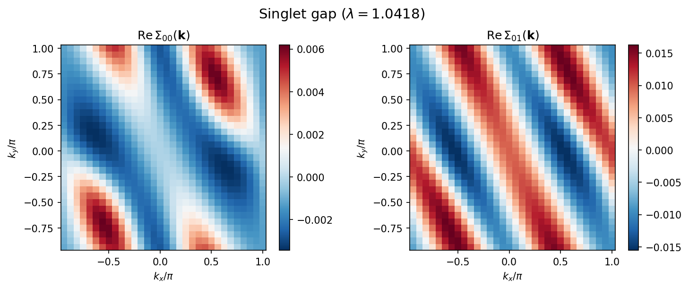
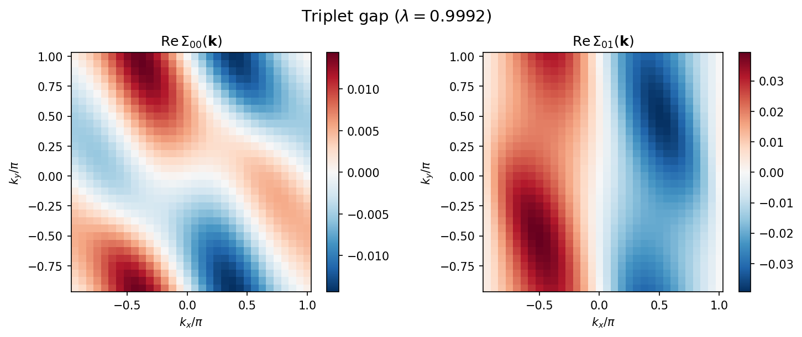
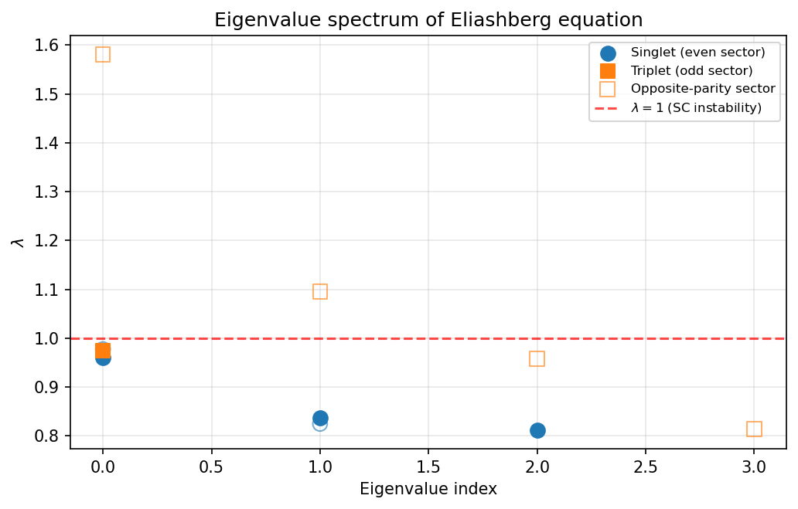

5.2. チュートリアル: Eliashberg方程式ソルバー¶
本チュートリアルでは、H-waveに含まれる線形化Eliashberg方程式ソルバー
hwave_scの使い方を説明します。
このツールは、RPAソルバーで計算した裸感受率\(\chi_0(\mathbf{q})\)
を用いて線形化Eliashberg方程式を解き、超伝導不安定性を解析します。
サンプルファイルはdocs/ja/source/rpa/sample_scディレクトリにあります。
5.2.1. 計算の流れ¶
計算は2つのステップで行います:
RPA計算 (
hwave): 裸感受率\(\chi_0(\mathbf{q})\)を計算し、chi0q.npzに保存します。Eliashberg方程式ソルバー (
hwave_sc):chi0q.npzを読み込み、 グリーン関数を再構成し、RPA頂点を計算した後、 線形化Eliashberg方程式を解きます。
5.2.2. モデル¶
本チュートリアルでは、二次元正方格子上の 2軌道タイトバインディングモデル を3/4フィリングで扱います。ハミルトニアンは以下の通りです:
ここで、オンサイトクーロン斥力\(U = 0.4\)、 軌道間クーロン相互作用\(V\)を使用します。
このサンプルは有機導体\(\beta\)-(meso-DMBEDT-TTF)\(_2\)PF\(_6\) の伝導層モデルに基づいており、 トランスファー積分は拡張ヒュッケル法による計算値を使用しています。 [1]
5.2.3. 理論¶
超伝導感受率¶
RPA電荷感受率\(\hat{X}^c\)およびスピン感受率\(\hat{X}^s\)は 以下のように与えられます:
ここで\(\hat{X}^{(0)}\)は裸感受率、 \(\hat{U}\)はオンサイト相互作用行列、 \(\hat{V}\)はサイト間相互作用行列です。
線形化Eliashberg方程式¶
一重項超伝導の線形化Eliashberg方程式は次のように書けます:
ペアリング相互作用は、一重項の場合:
三重項の場合:
\(\lambda_S = 1\) (\(\lambda_T = 1\)) が超伝導転移点に対応します。 \(\lambda > 1\)（正の固有値）のとき常伝導状態は超伝導に対して不安定です。 負の固有値は符号反転ギャップに対応しますが、 自己無撞着条件\(\Delta = K\Delta\)を満たさないため 超伝導不安定性を示しません。
Eliashberg方程式の数値解法として、hwave_scでは自己無撞着べき乗反復法
（固有値が最大のモードに収束）とArnoldi法による固有値解析を実装しています。
5.2.4. 入力ファイルの準備¶
パラメータファイル¶
TOML形式のパラメータファイルinput.tomlを作成します:
[log]
print_level = 1
[mode]
mode = "RPA"
[mode.param]
orbital_site = [0, 1] # the two molecules are different sites
T = 0.1
CellShape = [32, 32, 1]
SubShape = [1, 1, 1]
Nmat = 512
filling = 0.75
[file]
[file.input]
path_to_input = "."
[file.input.interaction]
path_to_input = "."
Geometry = "geom.dat"
Transfer = "transfer.dat"
CoulombIntra = "coulombintra.dat"
CoulombInter = "coulombinter.dat"
[file.output]
path_to_output = "output"
chi0q = "chi0q"
chiq = "chiq"
[eliashberg]
solver_mode = "both"
chi0q_mode = "load"
pairing_type = "singlet"
init_gap = "cos"
max_iter = 500
alpha = 0.5
convergence_tol = 1.0e-5
num_eigenvalues = 10
eigenvalue_method = "arnoldi"
output_gap = "gap.dat"
output_eigenvalue = "eigenvalue.dat"
このファイルは以下のセクションから構成されます。
[mode.param]セクション¶
T: 温度。CellShape: k点メッシュのサイズ（2次元系では 32 x 32 x 1）。Nmat: 松原振動数の数（512）。filling: 1軌道1スピンあたりの電子充填率（0.75 = 3/4フィリング）。
[file]セクション¶
[file.input.interaction]: 幾何情報、トランスファー積分、 相互作用パラメータのファイルを指定します。RPAステップと共通です。[file.output]: \(\chi_0(\mathbf{q})\)および \(\chi(\mathbf{q})\)の出力先ディレクトリとファイル名。
[eliashberg]セクション¶
Eliashberg方程式ソルバーの設定です。主なパラメータ:
solver_mode:"iteration"(自己無撞着べき乗法)、"eigenvalue"(Arnoldi固有値解析)、または"both"。chi0q_mode:"load"はRPA出力ファイルから \(\chi_0(\mathbf{q})\)を読み込みます。"calc"は内部で計算します。"flex"はFLEX計算の dressed 感受率を読み込みます （frequency = "dynamic"に必須）。"calc"は静的計算が使う唯一の振動数であるボソン振動数ゼロでのみ \(\chi_0(\mathbf{q})\)を計算するため、メモリは \(O(N_\mathrm{mat} N_k\,n_d^4)\)ではなく\(O(N_k\,n_d^4)\)です （\(N_k\)は k 点数、\(n_d\)は軌道数で、スピン軌道モードでは \(2N\)）。結果は全振動数のバブルのゼロ振動数スライスと丸め誤差の範囲で 一致します。chi0q ファイルは書き出しません。注釈
"calc"は この 入力ファイルのmode.paramの設定で \(\chi_0(\mathbf{q})\)を再計算します。"load"の結果と比較可能に するには、chi0q ファイルを生成した計算とこれらの設定を一致させる必要が あります。特にcoeff_tail（Matsubara 高周波数裾補正）は中程度のNmatにおいて\(\chi_0(\mathbf{q})\)を\(O(1)\)で変えます。 デフォルトのcoeff_tail = 0.0（補正なし）は収束が悪い場合があり、 実用的な RPA/FLEX 計算では通常coeff_tail = 1.0を用います。 chi0q ファイルには生成時の値が記録されており、読み込み時に設定と 食い違う場合はhwave_scが警告を出します。注釈
平均場の一体バンド: 組み立て。
[file.input] trans_mod（UHFk が出力する 一体ハミルトニアン）はTransferのバンドを置き換えます。green_initはTransferのバンドに Hartree 項を加え、Extern場（coeff_extern倍のテーブル）はさらにその上に加わります。chi0q_mode = "calc"または"load"の場合（外部のbond_greenを指定しないbond_channels = trueを含む）、hwave_scはこの組み立てたバンドを \(\chi_0(\mathbf{q})\)、化学ポテンシャル、ペアリング核の Green 関数のすべてに用います。したがって三つは同じハミルトニアンを表します。 キーの大文字・小文字は区別しません。ペアリング核（一重項・三重項）は スピンの添字を持たないため、スピンに依存しないバンドのみに対応します。スピンの判定と
spin_free_tol。スピンに依存するバンド （磁性をもつtrans_modやgreen_init、またはゼロでないExtern場）は、\(\chi_0(\mathbf{q})\)の計算や読み込みの前に エラーとして拒否されます。判定は組み立てた一体バンド （trans_mod、またはTransferのバンドにgreen_initの Hartree 項を加えたもの、さらにcoeff_extern倍のExtern） に対して行います。上向き・下向きスピンのブロックの差とスピン混成ブロックの 大きさは、エネルギーの単位で絶対値\(10^{-10}\)まで許されます。 この許容誤差は後述のspin_free_tolの既定値で、spin_free_tolで 大きくも小さくもできます。すべての成分が有限でなければなりません。 \(\max|H - H^\dagger|\)が\(\max(10^{-10}, 10^{-6}\max|H|)\)を 超えるバンドは拒否されます。\(10^{-10}\)を超えるがそれより小さい ずれ（例えば\(\pm R\)の行を別々に丸めた場合）は、エルミート部分 \((H + H^\dagger)/2\)に置き換えられ、警告が出ます。green_initの Green 関数そのものも、すべてのセルでスピンに 依存してはなりません（上向き・上向きと下向き・下向きのブロックが等しく、 スピン混成ブロックがない）。許容誤差は無次元の成分に対して \(\max(10^{-10}, \texttt{spin\_free\_tol})\)です。磁性をもつgreen_initはスピンの向きによらず磁性状態を表すため拒否されます （issue #88）。収束の緩い常磁性 UHF 解（例えばランダム初期状態からEPS = 6）には\(10^{-5}\)程度の分裂が残ることがあります。 UHF の収束を厳しくする、スピン対称な初期状態から UHF を始める、またはspin_free_tolを大きくしてください。 スピン偏極の場合は issue #88 で扱います。load・ボンド・FLEX 入力での挙動。
"load"では、chi0q ファイルを 出力した RPA 計算と同じtrans_mod/green_init/Externを 指定してください。この場合、読み込む chi0q が元のバンドで計算されている ため、エルミート性からの \(10^{-10}\)を超えるずれは、エルミート部分に 置き換えられず拒否されます。chi0q_mode = "flex"、frequency = "dynamic"、および外部のbond_greenを指定した場合は、 これらのキーは使われず、その旨の警告が出ます。感受率と Green 関数は FLEX 計算またはbond_greenのファイルから読み込まれるためです。Hartree 項のみの
green_init。green_initのバンドは \(T + \mathrm{Hartree}[G]\)（RPA の組み立てで、Fock 項を含みません） です。そのため Fock 項がある場合、つまりCoulombInter、Hund、Ising、Exchangeの行、オフサイトのPairHopの行 （\(R \neq 0\)、または[mode.param] orbital_siteで異なるサイトに ある軌道間）、またはCoulombのCoulombInter部分がある場合は、 同じ解から UHFk が出力するtrans_modと異なります。このときtrans_modを勧める警告が出ます。trans_modが推奨される入力で、 常磁性状態にはこれが整合した入力です。警告
修正前の
calc_scheme = "general"FLEX計算の出力を使う場合。 このパスは軌道ペアを転置したバブルから自己エネルギーを構成していたため、 多軌道模型ではsigma.npzとgreen.npzの軌道非対角成分が誤って います。chi0q_mode = "flex"が読む感受率は影響を受けないので問題 ありませんが、bond_greenは FLEX のgreen.npzを取るため対象です。 修正済みのビルドで再生成してください。1軌道の計算および"reduced"スキームは影響を受けません。 移行に関する警告を参照して ください。frequency: ペアリング頂点の振動数の扱い。"static"（デフォルト）は ボゾン振動数ゼロでペアリング頂点を評価する静的近似（Nakano--Kuroki 式(9)）で、 振動数依存性のないギャップを与えます。"dynamic"は、振動数依存のペアリング 頂点\(V(\mathbf{q}, i\omega_l)\)とギャップ\(\phi(\mathbf{k}, i\omega_n)\) を用いた、松原振動数に完全に依存する Eliashberg 方程式を解きます。chi0q_mode = "flex"が必要です （下記の動的振動数の節を参照）。pairing_type:"singlet"または"triplet"。スピン軌道モードでは ギャップがひとつのスピン軌道行列なので指定しません（スピン軌道模型（enable_spin_orbital）を参照）。init_gap: 反復法の初期ギャップ対称性。"cos"(\(\cos(k_x+k_y+k_z)\))、"d_x2y2"(\(\cos k_x - \cos k_y\))、"random"などが利用可能です。 有効な形状因子の一覧は"cos"、"s"、"s_ext"、"s_ext_2d"、"d_x2y2"、"d_y2z2"(\(\cos k_y - \cos k_z\)) 、"d_xy"、"d_xz"、"d_yz"、"d_z2"、"p_x"、"p_y"、"p_z"、"random"です。 準2次元セルCellShape = [1, Ny, Nz]（\(k_x = 0\)）では、 \(\sin k_x\)を含む形状因子（"p_x"、"d_xy"、"d_xz"）は 恒等的に消えるため無効です。三重項には"p_y"/"p_z"を、面内\(d\)波 には\((\pi,0)\)と\((0,\pi)\)でノードを持つ"d_yz"ではなく、 同点で逆符号のアンチノードを持つ"d_y2z2"を用いてください。max_iter: 自己無撞着反復の最大回数。alpha: 混合パラメータ（0: 混合なし、1: 古い解を完全保持）。convergence_tol: ギャップ関数の収束条件。num_eigenvalues: 固有値モードで計算する固有値の数。 動的経路では、これは列挙される固有値の個数を決めるだけで、どれが主固有値 として報告されるかは決めなくなりました。カーネルがチャネルの偶振動数 セクターを保存する場合、主固有値はそのセクターに制限した対称性整合な解 （下記のspectral_shiftを参照）から取られ、その実部最大の固有値はnum_eigenvaluesに依存しません。eigenvalue_method:"arnoldi"（デフォルト）、"subspace"、"shift-invert-gmres"/"shift-invert-bicgstab"/"shift-invert-lgmres"。spin_free_tol: 平均場の一体バンドのスピン非依存性判定の絶対許容誤差 （エネルギーの単位。上のchi0q_modeの注を参照。デフォルト1e-10、0 以上の有限の数）。測定した上向き・下向きの差やスピン混成が1e-10を超えspin_free_tol以下の場合、hwave_scは スピン平均したバンド\((H_\uparrow + H_\downarrow)/2\)を用い、 スピン混成ブロックを捨て、捨てた両方の大きさを警告として出力します。spin_free_tolを超える場合はバンドを拒否します。スピン平均したバンドは、hwave_scが\(\chi_0(\mathbf{q})\)を自ら計算する場合 （chi0q_mode = "calc"またはbond_channels = true）にのみ使えます。chi0q_mode = "load"では、読み込む chi0q が RPA 計算自身のバンドで 計算されているため、1e-10を超えるバンドは拒否されます（"calc"を 使うか、スピン対称なバンドから chi0q を作り直してください）。1e-10より 小さい値（例えば0）を指定すると、このバンドの判定は既定より厳しく なります。spin_free_tolにはgreen_initに対するもう一つの用途が あります。Green 関数そのものを無次元の成分について許容誤差 \(\max(10^{-10}, \texttt{spin\_free\_tol})\)で判定するため、G の判定は1e-10が下限で、それより厳しくはなりません。この許容誤差内のgreen_initでも、相互作用が大きいとバンドのスピン分裂がバンドの許容誤差を 超えることがあり、その場合はバンドの判定のメッセージで拒否されます。g2_tail: ペアバブル\(G^{(2)}\)に解析的な松原 tail 補正を適用 します（デフォルトtrue、バージョン 2.0 以降）。素朴な打ち切り和は主要な 単位行列 tail を取りこぼし（\(O(1/N_{\rm mat})\)の誤差）、わずかに 不定符号になり得るため、小さいNmatでは報告される固有値に偽の虚部が 混入します。この補正は漸近的です。保持される最大周波数が関連するエネル ギースケールを超えるときに有効で、窓端でグリーン関数が tail から大きく 外れている場合はソルバーが警告します（その領域では過補正になり得て、 正定値性チェックの通過は精度の保証になりません）。加算項はペアバブル 段階でのみ単位行列であり、組み上がったカーネルのスカラーシフトでは ないため、補正の有効化により先頭固有値の入れ替わりや shift-invert ターゲットとの距離の変化が正当に起こり得ます（これは補正された物理で あり、ソルバーの欠陥ではありません）。falseは補正導入前の結果を 再現します。sigma_shift（shift-invert 系のeigenvalue_methodのみ）: shift-invert ソルバの実数ターゲット\(\sigma\)。\(\sigma\)近傍の固有値が先に 求まります。素の"arnoldi"では無視されます（警告あり）。arnoldi では 代わりにspectral_shiftを使ってください。spectral_shift（eigenvalue_method = "arnoldi"のときのみ有効）: 正の数値または"auto"。ARPACK の既定の選択 （which='LM'）は 絶対値 最大の固有値を返すため、超伝導不安定性から遠い場合、小さな正 （引力的）の主固有値が、より大きな負（斥力的）の固有値に隠れて取りこぼされ、 報告される主固有値が負（非物理的）になることがあります。spectral_shiftを指定すると、シフトした演算子\(A + \sigma I\)に対して 実部 最大の 固有値（which='LR'；\(T_c\)で\(\lambda \to 1\)となる物理的な SC固有値）を求めます。シフトは内部で差し引かれるので、受け取る／保存される 固有値はシフト前の正しい値です。"auto"はスペクトル半径から \(\sigma\)を自動設定します。明示的に指定する場合は、最も負の固有値の 絶対値 より大きい正の\(\sigma\)を与えます（\(A + \sigma I\)の スペクトルが全て正の実部になるように）。主固有値が負になる場合や、対形成が 弱い系（低圧・擬1次元）を走査する場合に推奨します。上記のsigma_shift（shift-invert のターゲット）とは別物である点に注意してください。動的経路 （frequency = "dynamic"）では、チャネルについて実部最大の選択が自動で 適用されます（issue #202）。カーネルがチャネルの偶振動数セクターを保存する 場合、主固有値はそのセクターに制限した対称性整合な解（eigenvalue_selection = "LR_projected"）から取られ、その実部最大の固有値はnum_eigenvaluesに依存しません。セクターを保存せず、かつ素のarnoldiの集合に正のチャネル 固有値が含まれない場合は、代わりにspectral_shift = "auto"で一度だけ 解き直します（"LR_retry"）。いずれもeigenvalue_selectionに記録 されます（下記参照）。利用者が指定したspectral_shiftは非射影の経路に 適用されます。シード（固有ベクトル継続）付きの実行は解き直されないため、斥力 優勢な温度スキャンでは各点でspectral_shift = "auto"を指定して、シード 継続を主固有値と一致させてください。gpu:trueでカーネル適用（matvec/matmat、FFT 畳み込み）を GPU（CuPy）で 実行します。frequency = "dynamic"とfrequency = "static"の 両方 に 対応します（デフォルトfalse）。固有値ソルバー本体（ARPACK Arnoldi・べき乗 反復・部分空間反復・shift-invert）は常にホストで実行されます（CuPy に一般の 非エルミート固有値ソルバーが無いため）。反復ごとにデバイスへ渡るのはギャップ ベクトルのみです。使用可能な CuPy/CUDA デバイスが無い場合は警告を出して CPU に フォールバックします（下記のGPU実行の節を参照）。GPU 実行時はfft_workersは無視されます。gpu_required:trueにするとgpu = trueを厳格化し、CuPy/CUDA が 使えない場合に静かに CPU へフォールバックせずエラーで停止します （デフォルトfalse）。動的 Eliashberg ソルバー（[eliashberg]に設定） および FLEX・RPA ソルバー（gpuフラグと同じく[mode.param]に設定）で 有効です。fft_workers: 動的モードの空間 FFT のワーカースレッド数 （デフォルト1= 従来どおりの直列 numpy。-1で全コア。 GPU 実行時は無視されます）。matsubara_basis: 動的モードの松原軸の表現。デフォルトは"uniform"（従来どおり）。"ir"を指定すると sparse-ir による中間表現基底を 使用します（下記のIR基底の節を参照）。ir_tol: IR基底の打ち切り精度\(\varepsilon\)。デフォルトは 1e-8。ir_wmax: IR基底の実周波数バンド幅\(\omega_{\max}\)。省略時は 分散のスペクトル範囲\(\max|\varepsilon_k-\mu|\)と相互作用スケールから 自動推定します（推定できない場合は明示指定を求めるエラーになります）。 自動推定値は\(3\,(\max|\varepsilon_k-\mu| + \text{相互作用})\)、すなわち 化学ポテンシャルを基準にしたスペクトル半幅と最大相互作用スケールの和です。 FLEX ソルバも同一の推定式を用いるようになったため、自動ir_wmaxで FLEX から Eliashberg へ渡すと同じ IR 基底に揃います。ir_keep_static_chi:true/false。デフォルトはfalse。 スピン・電荷感受率が静的支配的な場合（サンプリング窓内でほぼ振動数に依存せず 大きい、すなわち臨界近傍）、IR圧縮が\(O(\beta/N_\mathrm{mat})\)の \(\delta(\tau)\)アーティファクトとして破棄する振動数非依存成分が 物理的な重みを持ち、破棄すると最大固有値が誤ります。破棄成分がデータスケールを 超える場合はソルバーが停止します。trueにすると停止せず静的成分を保持します （あるいはir_wmaxを下げる、FLEX のNmatを増やす）。
注釈
\(\beta\,\omega_\mathrm{max}\)を打ち切り下限より上に保つこと。
IRフィットの悪条件ガードは、サンプリンググリッドに対してバンド幅が
大き過ぎる 場合のみを検出し、その逆は検出できません。
\(\Lambda = \beta\,\omega_\mathrm{max}\)が 小さい 場合、フィット自体は
十分に良条件のままでも、基底がグリーン関数のバンド端を表現するには狭過ぎるため、
目に見えない基底打ち切り誤差を含みます。\(\omega_\mathrm{max}\)が
バンド端の単極グリーン関数を要求したir_tolの精度で表現できなくなると、
その誤差は 1% 程度に達します。\(\beta\,\omega_\mathrm{max}\)をこの下限より
上に保ってください。自動ir_wmax推定（構成上この下限を満たします）を
用いるか、安全な下限として明示的に
ir_wmax \(\ge 3\,(\text{バンド幅} + \text{相互作用})\)を設定します。
相互作用定義ファイル¶
相互作用定義ファイルはWannier90形式で記述し、 RPAソルバーと共通です。詳細は環境設定ファイルを参照してください。
Geometry (geom.dat):
1.000000000000 0.000000000000 0.000000000000
0.000000000000 1.000000000000 0.000000000000
0.000000000000 0.000000000000 1.000000000000
2
0.000000000000000e+00 0.000000000000000e+00 0.000000000000000e+00
0.000000000000000e+00 5.000000000000000e-01 0.000000000000000e+00
2軌道の単位胞を定義します。
Transfer (transfer.dat):
Transfer in wannier90-like format for uhfk
2
9
1 1 1 1 1 1 1 1 1
0 1 0 1 2 -0.082400000000 0.000000000000
0 -1 0 2 1 -0.082400000000 0.000000000000
0 0 0 1 2 -0.226000000000 0.000000000000
0 0 0 2 1 -0.226000000000 0.000000000000
-1 0 0 1 1 0.047500000000 0.000000000000
-1 0 0 2 2 0.047500000000 0.000000000000
1 0 0 1 1 0.047500000000 0.000000000000
1 0 0 2 2 0.047500000000 0.000000000000
-1 0 0 1 2 -0.043800000000 0.000000000000
1 0 0 2 1 -0.043800000000 0.000000000000
1 1 0 1 2 -0.115000000000 0.000000000000
-1 -1 0 2 1 -0.115000000000 0.000000000000
2軌道モデルのホッピング積分を定義します。
CoulombIntra (coulombintra.dat):
CoulombIntra in wannier90-like format for uhfk
2
1
1
0 0 0 1 1 0.400000000000 0.000000000000
0 0 0 2 2 0.400000000000 0.000000000000
各軌道のオンサイトクーロン斥力\(U = 0.4\)。
CoulombInter (coulombinter.dat):
CoulombInter in wannier90-like format for uhfk
2
9
1 1 1 1 1 1 1 1 1
0 1 0 1 2 0.096000000000 0.000000000000
0 -1 0 2 1 0.096000000000 0.000000000000
0 0 0 1 2 0.320000000000 0.000000000000
0 0 0 2 1 0.320000000000 0.000000000000
-1 0 0 1 1 0.204800000000 0.000000000000
-1 0 0 2 2 0.204800000000 0.000000000000
1 0 0 1 1 0.204800000000 0.000000000000
1 0 0 2 2 0.204800000000 0.000000000000
-1 0 0 1 2 0.096000000000 0.000000000000
1 0 0 2 1 0.096000000000 0.000000000000
1 1 0 1 2 0.204800000000 0.000000000000
-1 -1 0 2 1 0.204800000000 0.000000000000
軌道間・サイト間クーロン相互作用。
5.2.5. ステップ1: RPA計算の実行¶
まず、RPAソルバーを実行して裸感受率を計算します:
$ hwave input.toml
output/chi0q.npzとoutput/chiq.npzが生成されます。
32 x 32メッシュの場合、数秒で完了します。
5.2.6. ステップ2: Eliashberg方程式ソルバーの実行¶
次に、同じ入力ファイルを使ってEliashberg方程式ソルバーを実行します:
$ hwave_sc input.toml
ソルバーは以下の処理を行います:
output/chi0q.npzから\(\chi_0(\mathbf{q})\)を読み込みます。相互作用ファイルを読み込み、ハミルトニアンを構築します。
非相互作用グリーン関数\(G(\mathbf{k}, i\omega_n)\)を構成します。
RPA電荷・スピン頂点\(V_c(\mathbf{q})\)、 \(V_s(\mathbf{q})\)を計算します。
線形化Eliashberg方程式を自己無撞着反復法および/または 固有値解析で解きます。
実行ログの例:
hwave_sc: === Self-consistent iteration ===
hwave_sc: Iteration 0: eigenvalue = 0.925449, diff = 3.540384e-01
hwave_sc: Iteration 1: eigenvalue = 0.818387, diff = 7.885727e-02
...
hwave_sc: Iteration 192: eigenvalue = 0.961078, diff = 9.752299e-06
hwave_sc: Converged at iteration 193
hwave_sc: Iteration result: eigenvalue = 0.961078, converged = True, n_iter = 193
引き続き固有値解析の結果が表示されます:
hwave_sc: === Eigenvalue analysis ===
hwave_sc: Leading eigenvalues:
hwave_sc: 0: 0.961079 (|ev| = 0.961079)
hwave_sc: 1: 0.837896 (|ev| = 0.837896)
hwave_sc: 2: 0.812195 (|ev| = 0.812195)
hwave_sc: 3: -0.889340 (|ev| = 0.889340)
hwave_sc: 4: -1.072771 (|ev| = 1.072771)
hwave_sc: 5: -1.351573 (|ev| = 1.351573)
hwave_sc: 6: 0.977706 (|ev| = 0.977706) [opposite-parity sector]
hwave_sc: 7: 0.824931 (|ev| = 0.824931) [opposite-parity sector]
...
正の固有値\(\lambda > 1\)は、その温度で超伝導不安定性が 存在することを示します。負の固有値は符号反転ギャップに対応しますが、 超伝導不安定性は示しません。
固有対は チャネルのパリティ（一重項=偶、三重項=奇）を持つものが
先頭に並べられます。先頭（index 0）が物理解で、自己無撞着反復の結果と
一致します。[opposite-parity sector]のタグが付いた固有値は逆パリティの
セクターに属し、そのスピンチャネルではパウリ原理により禁止され、物理的な
不安定性を表しません（下記のパリティに関する注記を参照）。
eigenvalue.datの末尾列matchがこれを記録します（1 = チャネルのパリティ
セクター、0 = 逆パリティセクター）。
5.2.7. 計算結果¶
ギャップ関数¶
以下の図は、自己無撞着反復から得られた ギャップ関数\(\Sigma_{\alpha\beta}(\mathbf{k})\) の運動量空間での分布を示しています。
一重項チャネル (\(\lambda \approx 0.96\)):


図 5.3 一重項ギャップ関数のk空間分布。 左: 軌道内成分\(\mathrm{Re}\,\Sigma_{00}(\mathbf{k})\)。 右: 軌道間成分\(\mathrm{Re}\,\Sigma_{01}(\mathbf{k})\)。 軌道間成分が軌道内成分の約5倍大きく、 軌道間ペアリングが支配的であることを示す。¶
三重項チャネル (\(\lambda \approx 0.97\)):


図 5.4 三重項ギャップ関数のk空間分布。 左: 軌道内成分\(\mathrm{Re}\,\Sigma_{00}(\mathbf{k})\)。 右: 軌道間成分\(\mathrm{Re}\,\Sigma_{01}(\mathbf{k})\)。 ギャップは\(\mathbf{k} \to -\mathbf{k}\)（および軌道の入れ替え）に対して 奇 であり、スピン三重項ペアリングに要請される対称性を満たす。 軌道間成分が再び大きい。¶
固有値スペクトル¶
一重項・三重項チャネルのEliashberg方程式の固有値スペクトルを以下に示します。


図 5.5 線形化Eliashberg方程式の正の固有値スペクトル\(\lambda\)。 赤破線は\(\lambda = 1\)（超伝導不安定性の判定基準）を示す。 塗りつぶしマーカーは 物理的 な固有値（ギャップがチャネルのパリティ ＝一重項は偶・三重項は奇を持つ）、白抜きマーカーは 逆パリティの spurious モードである。物理的な固有値はすべて1未満である。1を超える 2つの白抜きマーカーは三重項カーネルの偶パリティ解で、スピン三重項 ペアリングにはパウリ原理により禁止される（下記のパリティに関する注記を参照）。¶
Arnoldi固有値解析は複数の固有値を検出します。 図には超伝導不安定性の判定基準\(\lambda = 1\)に関連する 正の固有値のみを示しています。 一重項チャネルの主要な 物理的（偶パリティ）固有値は \(\lambda_S \approx 0.96 < 1\)で、自己無撞着反復法の結果と一致し、 この温度で一重項SC不安定性は存在しません。
三重項チャネルの主要な 物理的（奇パリティ）固有値は \(\lambda_T \approx 0.97 < 1\)です。三重項の計算に現れる \(1.58\)や\(1.10\)付近の大きな値は偶パリティの spurious モードであり、 三重項不安定性では ありません。三重項がわずかに先行します （\(\lambda_T > \lambda_S\)）が、この温度ではどちらのチャネルもしきい値を いくらか下回っています。
描画スクリプト¶
上記の図はサンプルディレクトリに含まれる描画スクリプトで再現できます:
$ python plot_results.py
5.2.8. 出力ファイル¶
ソルバーはoutputディレクトリに以下のファイルを出力します。
gap.dat¶
収束したギャップ関数\(\Delta_{\alpha\beta}(\mathbf{k})\) のk空間表示。各行の形式:
kx ky kz Re(Δ_00) Im(Δ_00) Re(Δ_01) Im(Δ_01) Re(Δ_10) Im(Δ_10) Re(Δ_11) Im(Δ_11)
ここで\(\alpha, \beta\)は軌道インデックスです。
eigenvalue.dat¶
線形化Eliashberg方程式の固有値:
# Iteration eigenvalue
9.61078331e-01
# Eigenvalue analysis
# index Re(eigenvalue) Im(eigenvalue) |eigenvalue| match(1=channel-parity)
0 9.61078596e-01 -3.64174908e-12 9.61078596e-01 1
1 8.37896272e-01 -3.65082177e-12 8.37896272e-01 1
...
末尾のmatch列は、固有ベクトルがチャネルのパリティを持つ（物理的な
一重項／三重項ギャップ）とき1、逆パリティの spurious モードのとき0です
（上記のパリティに関する注記を参照）。この列を持たない旧形式の出力もそのまま
読み込めます。
5.2.9. 物理的解釈¶
線形化Eliashberg方程式の最大固有値\(\lambda\)は 超伝導の発生を判定します:
\(\lambda > 1\): 常伝導状態は超伝導に対して不安定です。 対応する固有ベクトルがギャップ関数の対称性を与えます。
\(\lambda < 1\)（全ての正の固有値について）: その温度では常伝導状態が安定です。
負の固有値は、多軌道系における\(s_\pm\)波のような 符号反転ペアリング対称性に対応しますが、 自己無撞着条件\(\Delta = K\Delta\)は\(\lambda = 1\) （\(\lambda = -1\)ではない）を要求するため、 負の固有値はその大きさによらず超伝導不安定性を 示しません 。
温度を変化させて最大の正の固有値が\(\lambda = 1\)となる点を 求めることで、超伝導転移温度\(T_c\)を決定できます。
本チュートリアルでは、\(T = 0.1\)で両方の物理的チャネルが不安定性の しきい値を下回っており、\(\lambda_S \approx 0.96\)（一重項・偶）、 \(\lambda_T \approx 0.97\)（三重項・奇）で、三重項がわずかに先行します。
注釈
パリティとパウリ原理。
クーパー対は2電子の交換（スピン交換・軌道交換・\(\mathbf{k} \to -\mathbf{k}\)
の同時操作）に対して反対称でなければなりません。（偶周波数の）ギャップ
\(\Sigma_{\alpha\beta}(\mathbf{k})\)では、これが空間パリティ
\(P:\ \Sigma_{\alpha\beta}(\mathbf{k}) \to \Sigma_{\beta\alpha}(-\mathbf{k})\)
を固定します。スピン一重項ギャップは 偶（\(P = +1\)）、スピン三重項
ギャップは 奇（\(P = -1\)）です。Eliashbergカーネルはギャップ全空間に
作用し片方のパリティに制限されないため、各チャネルのカーネルは逆パリティの
固有ベクトルも持ちます。これらはそのスピンチャネルでは物理的意味を持たない
数学的解です（例えば三重項カーネルの偶パリティ固有値は全対称な対状態に相当し、
パウリ原理で禁止されます）。そのためhwave_scは各反復をチャネルのパリティ
セクターへ射影し、固有値解析は各モードを物理的（match = 1）か spurious
（match = 0）かでラベル付けします。三重項の計算に現れる
\(\lambda \approx 1.58,\ 1.10\)という大きな値はこのような spurious な
偶パリティモードであり、三重項不安定性では ありません 。
一重項と三重項の比較¶
入力ファイルのpairing_typeを"triplet"に変更することで、
一重項と三重項のチャネルを比較できます。
三重項チャネルに切り替える際は、init_gapも"p_x"のような
奇パリティ（三重項）の初期ギャップに設定してください（同梱の
input_triplet.tomlはそのように設定済みです）。既定の
init_gap = "cos"は偶パリティ（一重項）の初期ギャップであり、
ソルバーはパリティの異なる初期ギャップをエラーとして拒否するようになりました
（非物理的なセクターへ収束するのを防ぐため）。あるいはinit_gapを
省略すれば、ソルバーがチャネルのパリティを自動選択します。
同じパラメータで\(T = 0.1\)の場合、主要な物理的固有値は
\(\lambda_T \approx 0.97\)（三重項）と\(\lambda_S \approx 0.96\)
（一重項）で、三重項がわずかに先行します。これは、\(T > 0.05\)で
三重項SC状態が一重項と競合するという文献 [1] の結果と整合します。
単位胞内の2つの分子は別々のサイトなので、入力ではorbital_site = [0, 1]と
宣言しています。これにより、単位胞内の分子間相互作用（R = 0の軌道間
CoulombInterの行）は、他の分子間相互作用と同様に密度どうしの（Hartree）部分
だけで入り、文献 [1] と同じ扱いになります。このキーがない場合は1つのサイト内の
相互作用として交換の寄与も含めて扱われます（設定リファレンスのorbital_siteを
参照）。issue #239 以降、hwave_scの対形成バーテックス（bond_channels =
false）も、文献 [1] と同じく単位胞をまたぐ相互作用の Hartree 部分だけを含みます
（以前の版ではその交換を近似的に、つぶした形で加えていました）。この節に示す数値は
現在の扱いで計算したものです（以前の版では\(\lambda_S \approx 0.94\)、
\(\lambda_T \approx 1.00\)でした）。
5.2.10. 動的（振動数依存）Eliashberg方程式¶
hwave_scは既定では 静的近似 で Eliashberg 方程式を解きます。すなわち
ペアリング頂点をボゾン松原振動数ゼロで評価し（Nakano--Kuroki 式(9) の静的近似）、
ギャップ\(\Sigma(\mathbf{k})\)は振動数依存性を持ちません。[eliashberg]
セクションでfrequency = "dynamic"と設定すると、代わりに 振動数に完全に
依存する 線形化 Eliashberg 方程式
を解きます。ここではギャップ\(\phi(\mathbf{k}, i\omega_n)\)のフェルミオン 松原軸全体と、振動数依存のペアリング頂点\(V(\mathbf{q}, i\omega_l)\)を保持 します。頂点は（静的な係数ではなく）虚時間の積として作用するため、カーネルは 異なる松原振動数どうしを結合します。
FLEXの前提条件¶
動的モードは FLEX ソルバーのみが生成する振動数分解された入力を必要とするため、
chi0q_mode = "flex"で実行する 必要があります。hwave_scを呼び出す前に、
Eliashberg ステップが読み込むディレクトリへ以下を書き出す FLEX 計算
（mode = "FLEX"）を実行してください:
chiq_s.npzとchiq_c.npz-- 全 ボゾン松原軸（Nmat個の全振動数） 上のスピン・電荷感受率、およびgreen.npz-- dressed グリーン関数 \(G(\mathbf{k}, i\omega_n)\)（これからペアバブルを構成します）。
注釈
FLEX の感受率ファイルにはchi_conventionタグ（reduced スキームは
"kuroki"、general full-vertex スキームは"myo"）が付与されており、
Eliashberg ローダーはこれを用いて軌道レイアウトを解釈します。2軌道系（norb = 2）では reduced のスピン軌道次元と orbital-pair 次元が一致
（ともに4）するため、両者の区別はこのタグに依存します。本修正以前の H-wave
は形状のみからレイアウトを推定し、norb = 2の reduced (kuroki) chi を
orbital-pair と誤認して pairing vertex を壊していました。該当する計算の Eliashberg
固有値・ギャップ関数は本バージョンで修正されます（したがって変化します）。
1軌道系および general (myo) の結果は影響を受けません。
警告
多軌道の reduced スキーム FLEX を用いた計算結果は変化する可能性があります。 reduced (kuroki) 感受率の行列添字は密度対であり、保存されている \(X[a,b]\)は\(\chi_{(a,a),(b,b)}\)です。以前のバージョンはこれを \(n_\text{orb}^2\)の orbital-pair 空間へ \(\text{out}[(l_1,l_2),(l_3,l_2)] = X[l_1,l_3]\)として埋め込んでいました。 この置き方では、pairing vertex \(S \chi S\)が実際に参照する軌道間の密度結合 \(\chi_{(0,0),(1,1)}\)が失われ、さらに reduced スキームが計算していない 軌道対の位置に\(X\)が散布されます。本バージョンでは正しく \(\text{out}[(a,a),(b,b)] = X[a,b]\)（他の成分はすべてゼロ）と 埋め込みます。
したがって、calc_scheme = "reduced"の FLEX を用いた
norb >= 2の計算では、static・dynamic の双方で
chi0q_mode = "flex"の結果が変化します。要因は独立に2つあり、軌道間の
密度成分がゼロでも安全とは限りません---旧来の置き方は
\(\chi_{(a,a),(b,b)}\)（\(a \neq b\)）を落とすと同時に、
相互作用が非密度ブロックに届く場合には、対角成分
\(\chi_{(a,a),(a,a)}\)からそこに dressing を捏造していました。
保存済みの固有値・ギャップ関数は再計算が必要とお考えください。1軌道系（norb = 1）は
両者の埋め込みが一致するためビット単位で不変であり、general (myo) の結果も
同様に不変です。本修正により、CoulombIntraのみの reduced 計算は、
同一の \(\Sigma = 0\) の物理（FLEX をMix = 0、
IterationMax = 1とした場合）に対してchi0q_mode = "load"および
general スキームの結果と厳密に一致するようになります（修正前は一致しません
でした）。これは pairing vertex についてのみの言明です。自己無撞着に
解いた場合の両スキームが交換可能であることまでは意味しません---その場合は
自己エネルギーの構成も異なります。
このバージョンから、IRネイティブな感受率ファイル（write_densified =
false）はこの chi_convention タグを必ず持つ必要があり、また
ローダーはテンソルの形状から推定されるレイアウトと矛盾する
chi_conventionを検出すると、誤った pairing vertex を黙って構築する
代わりに明示的なメッセージで即座に停止するようになりました。現行の
H-wave が書き出すファイルは常に整合したタグを持つため、これは手編集または
外部生成の感受率ファイルにのみ影響します。
Nmatは偶数で、かつ FLEX 出力と[mode.param]の値とで一致していなければ
なりません。chi0q_mode = "flex"なしでfrequency = "dynamic"を指定した
場合、Nmatが奇数の場合、あるいは dressed green.npzが無い場合、ソルバーは
黙って別の処理へフォールバックせず、説明的なエラーで停止します。FLEX 出力
ディレクトリは[file.input] path_to_flex_outputで指定でき（既定は
[file.output]ディレクトリ）、個々のファイル名は[eliashberg]の
flex_chi_s / flex_chi_c / flex_greenで上書きできます。
出力¶
動的モードはeigenvalue.dat（最大固有値\(\lambda\)）に加えて、
以下を書き出します:
gap_dynamic.npz振動数分解されたギャップ全体とそのメタデータ。キー:
gap: 形状(norb, norb, Nx, Ny, Nz, Nmat)の複素配列 -- \(\phi_{\alpha\beta}(\mathbf{k}, i\omega_n)\)。iomega: 中心化されたフェルミオン松原振動数 \(\omega_n = (2n + 1 - N_{\mathrm{mat}})\pi T\)。T: 温度。pairing_type:"singlet"または"triplet"。frequency:"dynamic"。eigenvalue: 最大固有値\(\lambda\)。axis_order:"(orb1, orb2, kx, ky, kz, iomega)"。normalization: ゲージ規約 -- ギャップは全成分について L2 規格化され、 最大絶対値の成分が実正になるよう回転されます。これにより保存されるギャップは 実行ごと・線形代数バックエンドごとに再現可能です。gap_sector_weights: 総和が 1 となる 4 つの実数 -- 返されたギャップの \(\|\phi\|^2\)が、運動量・振動数のパリティセクターそれぞれに占める割合です （動的ソルバーのペアリングチャネルを参照）。gap_sector_labels: 上と同じ順序での 4 つのセクター名、すなわち"even_k_even_w","odd_k_even_w","even_k_odd_w","odd_k_odd_w"。sector_selection: その実行が選んだセクター。"channel"・"combined_parity"・"none"のいずれかです。べき乗反復の経路では 反復ベクトルを射影したセクターを、（射影を行わない）固有値ソルバーモードでは 固有対の並べ替えが一致した段階を表し、後者はeigenvalue.datのmatch列の意味そのものです。同じ節を参照してください。eigenvalue_selection: 報告される主固有値を生んだ選択基準。"LR_projected"（保存されたチャネルセクターに制限した対称性整合な解。num_eigenvalues非依存の基準）・"LM"（素のarnoldi、絶対値 最大）・"LR"（利用者指定のspectral_shift、実部最大）・"LR_retry"（非射影の"LM"集合に正のチャネル固有値が無かった ときの、実部最大を求める自動再求解）・"dense-LR"（微小演算子の稠密な 実部最大解）・"shift-invert"・"iteration"（べき乗反復）のいずれか です。eigenvalue.datには# eigenvalue_selection: ...ヘッダー行と しても書き出されます。
gap.dat最小の正の松原振動数（インデックス
Nmat//2）におけるギャップの単一振動数 スライス。列の並びは静的なgap.datと同じ（kx ky kzの後に軌道対ごとのRe/Im）です。先頭行は#で始まるヘッダで、frequency=dynamicと スライスのインデックス・その\(\omega_n\)を記録します。
チャネルパリティによる選別¶
静的ソルバーと同様に、動的モードも単に代数的に最大の固有値ではなく、
指定したペアリングチャネルの 先頭固有対を報告します。フェルミオンの反対称性により、
ギャップの結合パリティ \(\phi_{\alpha\beta}(\mathbf{k}, i\omega_n) \to
\phi_{\beta\alpha}(-\mathbf{k}, -i\omega_n)\) が決まります（singletでは偶、
tripletでは奇）。ソルバーはその制約の中で、次節で述べる従来型の
偶振動数 セクターを選び出します。Arnoldi
の固有対はチャネルのモードが先頭に来るよう並べ替えられ、
eigenvalue.datの固有値表には静的出力と同様の末尾列matchが
付きます（一致したセクターで1、セクター外で0）。この列は
一致したセクターの名前 を持ちます。すなわち
match(1=channel even-frequency sector)、フォールバック段階が使われた
場合はmatch(1=combined-parity sector; no even-frequency eigenpair)で、
1の意味を推測する必要はありません。計算したnum_eigenvalues個の
固有対のいずれもどちらのセクターにも無い
場合は、警告を出して生の先頭固有対にフォールバックします。その際は
num_eigenvaluesを増やすかpairing_typeを確認してください。べき乗反復
（solver_mode = "iteration"）では、カーネルがチャネルセクターを保つ場合は
各反復ベクトルをそのセクターへ、結合パリティのみを保つ場合はより広い結合パリティ
セクターへ射影し、どちらも保たない場合は射影しません（いずれのフォールバックも
警告されます）。いずれの経路も、用いたセクターをsector_selectionとして
記録します。
動的ソルバーのペアリングチャネル¶
上記の結合パリティは反対称性の 制約 にすぎず、その 2 つの固有空間はそれぞれ さらに 2 つの振動数パリティを含みます。ソルバーが報告するチャネルは、従来型の 偶振動数 セクターです。
singlet: \(\mathbf{k}\)について偶、振動数について偶。triplet: \(\mathbf{k}\)について奇、振動数について偶。
ここで「振動数について偶」とは \(\phi_{\alpha\beta}(\mathbf{k}, i\omega_n) \to \phi_{\alpha\beta}(\mathbf{k}, -i\omega_n)\)（振動数のみの反転。軌道添字は そのまま）に対する不変性を意味します。一方、運動量のパリティは静的な経路と 同様に軌道の転置を伴い、 \(\phi_{\alpha\beta}(\mathbf{k}, i\omega_n) \to \phi_{\beta\alpha}(-\mathbf{k}, i\omega_n)\) です。両者の積が上記の結合パリティに なります。
奇振動数ペアリングは解きません。 残る 2 つのセクター、すなわち \(\mathbf{k}\)奇・振動数奇（結合パリティ \(+1\)）と \(\mathbf{k}\)偶・振動数奇（結合パリティ \(-1\)）は、どちらの チャネル射影演算子によっても消去されます。
各実行は、実際に返されたギャップの内訳を記録します。4 つのセクターの重み
（ノルム二乗の割合、総和は 1）はgap_dynamic.npz /
eliashberg_bond_<type>.npzにgap_sector_weightsとして、その名前は
gap_sector_labelsとして書き出され、さらにeigenvalue.dat（および
bond エントリのeigenvalue_bond_<type>.dat）には次のヘッダ行が付きます。
# gap_sector_weights even_k_even_w=1.000000 odd_k_even_w=0.000000 even_k_odd_w=0.000000 odd_k_odd_w=0.000000
ソルバーは当該チャネルの重みをINFOでログ出力し、0.999を下回る場合は
警告します。その場合、返されたギャップは指定チャネルの純粋な偶振動数状態では
なく、重みがその内訳を示します。
注釈
チャネルへの射影は、カーネルが振動数パリティを保存する場合にのみ適用されます
（単一軌道模型は常に、多軌道模型では対応する格子・軌道対称性がある場合）。一般の
多軌道カーネルは 2 つのパリティの積（反対称性の制約）のみを保存します。その場合に
より狭い偶振動数セクターへ射影すると、固有値問題がそれ自身の 制限 になり、得られる
値はカーネルの固有値ではなくなります。そこで、そのような場合には反復ベクトルを
結合パリティセクターへ射影し（警告を出します）、報告される \(\lambda\)は
常にカーネル本来の固有値となります。ギャップの内訳はセクター重みが示します。
どちらの場合であったかは、sector_selection（"channel"・
"combined_parity"・"none"）として npz のキーおよび固有値ファイルの
# sector_selection=...ヘッダー行に記録されます。固有値ソルバー系では、
カーネルがチャネルの偶振動数セクターを保存する場合、主固有対はそのセクターに
制限した解から得られます（sector_selection = "channel"、issue #202）。
保存しない場合は計算された固有対を並べ替え、チャネルの偶振動数セクターを優先し、
そこに固有対が無い場合にのみ結合パリティセクターへフォールバックします。この
場合のsector_selectionは一致した段階を表し、eigenvalue.datの
match列の見出しもそれに従います。
注釈
主固有値は num_eigenvalues に依存しません。 素のarnoldi
は ARPACK に 絶対値 最大の固有値（which='LM'）を要求するため、より
大きな実部をもつ逆セクターや斥力的なモードに埋もれて、小さな正（引力的）の
チャネル固有値が短いリストから欠落することがあり、その場合に報告される主固有値は
num_eigenvaluesに依存してしまいます。カーネルがチャネルの偶振動数
セクターを保存する場合、動的ソルバーはそのセクターに制限したカーネル
（べき乗反復と同じ射影）を解き、その実部最大の固有値はチャネルの Tc 固有値で
num_eigenvaluesに依存しません。そのセクターが斥力的なら答えは最も斥力の
弱い（実部最大の）固有値です。セクターを保存しない場合は、非射影の"LM"
集合に正のチャネル固有値が無ければspectral_shift = "auto"（実部最大）で
一度だけ解き直します（ベストエフォート）。用いた基準は
eigenvalue_selectionとして記録されます（"LR_projected"・"LM"・
"LR"（利用者指定のspectral_shift）・"LR_retry"（自動再求解）・
"dense-LR"・"shift-invert"・"iteration"）。npz のキーとしても、
eigenvalue.datの# eigenvalue_selection: ...ヘッダー行としても
書き出されます。あらかじめspectral_shift = "auto"を指定しておけば非射影
経路での追加の求解は生じません。主となる正の固有値の基準はsolver_mode = "iteration"
（自己無撞着なべき乗反復。斥力優勢のときはspectral_shift = "auto"を
併用）です。これは実部最大のモードに直接収束し、num_eigenvaluesには
まったく依存しません。
警告
本バージョンでの変更点。 以前のバージョンは結合パリティのみで固有対を
選んでいました。そのため報告されたtripletが奇振動数（\(\mathbf{k}\)
偶・振動数奇）の状態であることがあり、まれには報告されたsingletが
\(\mathbf{k}\)奇・振動数奇の状態であることもありました。いずれも結合
パリティは正しいためです。本バージョンより前に動的ソルバーで得た三重項の結果は
再計算してください。ギャップが既に（\(\mathbf{k}\)偶・振動数偶）
セクターにある一重項の計算は、数値的に変わりません。
チャネル分解（診断用）¶
ペアリング頂点は、スピンゆらぎ項・電荷ゆらぎ項・瞬間的な裸の項の和です。 一重項・三重項チャネルではそれぞれ
であり、いずれもスピン（\(\chi_{\mathrm s}\)）・電荷
（\(\chi_{\mathrm c}\)）感受率について線形です（係数と裸の項が異なるだけ）。
したがってこの分解はどちらのpairing_typeにも適用できます。
[eliashberg]セクションの2つの任意のブール値により、頂点を構成する前に
一方のチャネルを 0 にでき、ペアリング強度をスピン／電荷ゆらぎに切り分けられます。
zero_chi_c（既定false）：\(\chi_{\mathrm c}\)を 0 にする。 頂点はスピンゆらぎ項＋裸の項を保持（スピンチャネル）。zero_chi_s（既定false）：\(\chi_{\mathrm s}\)を 0 にする。 頂点は電荷ゆらぎ項＋裸の項を保持（電荷チャネル）。
注釈
これらのフラグは動的頂点（frequency = "dynamic"）にのみ適用されます。
静的ソルバー（frequency = "static"、既定）はカーネルを RPA/FLEX の
静的感受率から構成し、カーネル構成時にこれらを使用しません。
frequency = "static"で指定しても効果はなく、警告が出ます。
注釈
三重項の裸の項（issue #262）。 \(\tfrac{1}{2}(\hat C - \hat S)\)では
交差成分 \((ab, ab)\)（\(a \neq b\)）を除きます。そこでは軌道間の
密度型の項（CoulombInter、Hund、Ising）が密度成分
\((aa, bb)\)の交換像となり、三重項のパリティをもつギャップの上では両者が
同じ項を2回数えるためです。以前の版ではこれらの成分を残していたため、オンサイトの
軌道間のCoulombInter（\(U'\)）・Hund・Isingの1次の三重項対形成は本来の2倍で、
非ボンド経路（bond_channels = false。Fock 成分をこれらの成分に
畳み込みます）でのオフサイトの軌道間の項は最大で3倍ずれていました。そのような
項を含む多軌道の三重項の結果は変わるため（一重項チャネルと単一軌道模型は
影響を受けません）、再計算してください。
例えばスピンチャネルの診断は次のように指定します。
[eliashberg]
zero_chi_c = true
0 にするのは動的感受率関数だけであり、裸の項に含まれる静的相互作用行列
\(\hat S\)と\(\hat C\)は変更しません。
両方をtrueにすると瞬間的な裸の頂点のみが残ります。いずれも既定で off の
ため通常の計算には影響せず、チャネルを 0 にすると警告が出ます。これらは
診断用 です：瞬間的な裸の項は常に保持され、線形化ギャップ固有値問題は
頂点について非線形なので、別々に 0 にした計算の固有値は加法的ではありません（一般に
\(\lambda_{\mathrm s} + \lambda_{\mathrm c} \neq \lambda_{\mathrm{full}}\)）。
有効なフラグはgap_dynamic.npz, gap.dat, eigenvalue.datに記録
されます。通常の本計算では両方を off にしてください。
固有ベクトル継続（seed_eigenvector）¶
通常、報告される先頭固有対は「代数的に最大」のものです。振動数依存（非エルミート）
カーネルでは、これは exceptional point（2つの実固有値が衝突して複素共役対に分裂
する点）近傍で脆弱になり、FLEX自己エネルギーが滑らかに変化していても、隣接温度で
「先頭」ブランチが不連続にジャンプすることがあります。1つの物理ブランチの追跡を
助けるには、[eliashberg] seed_eigenvectorに近傍の計算（例：1つ上の温度）が
出力したgap_dynamic.npzを指定します。その gap は ARPACK の開始ベクトルとして
使われ、かつ、固有値ソルバが実際に返した固有対（num_eigenvalues、
および shift-invert 経路ではsigma_shiftで決まる範囲）の中から、単に代数的に
最大の固有値ではなく、最も重なりの大きい固有対を選ぶのに使われます。物理的な
ブランチがそもそも返された固有対の中になければ、num_eigenvaluesを増やすか
sigma_shiftをその近傍に移してください。温度を段階的に下げ、各計算に直前の
gap_dynamic.npzを与えることは、同じ対称性（例：d波）を掃引全体で追跡する助けに
なりますが、保証ではありません。温度刻みが大きすぎると、物理的なブランチを
見失うことがあります。種は計算と同じCellShapeとNmatでなければならず
（不一致は即エラー）、continuation スイープではNmatを固定してください。
IR経路では種の gap は IR ノードへ自動で再フィットされます。[eliashberg]
sigma_shiftは shift-invert の狙い値を明示指定します（未指定なら予備 Arnoldi
から推定）。sigma_shiftをブランチ近傍に置きseed_eigenvectorと併用
すると、隠れた／複素化する固有値の解決に役立ちます。
温度継続計算（hwave_tsweep）¶
上記のようにsigma_initとseed_eigenvectorを温度掃引で手動でつなぐには、
温度ごとにhwave/hwave_scを実行し直し、各ステップの出力を次のステップの
入力へ手作業で配線する必要があります。hwave_tsweepコマンド（hwave・
hwave_scと同様にパッケージに同梱されています）はこれを自動化します。1つの
ベース TOML（単一の FLEX+Eliashberg 計算で使う[mode]/[mode.param]/
[file]/[eliashberg]の設定そのもの）に[continuation]セクションを
加えて渡すと、降順の温度ラダーに沿って FLEX（および、無効化していなければ
Eliashberg ソルバー）を実行します。各段では、直前の段の最終的に保存された自己エネルギーを sigma_initとしてこの段の FLEX へ（ウォームスタート）、
直前の段の動的ギャップを seed_eigenvectorとしてこの段の Eliashberg 計算へ
（固有ベクトル継続）与えます。ウォームスタートの連鎖全体を自動化することで、
各段を（毎回異なる準安定解に落ち着く恐れを抱えながら）コールドスタートせずに
済みます。この連鎖は直前の段が収束していることを要求しません。エラーになって
おらず種ファイルが存在する段であれば、その FLEX の収束状況にかかわらず次の段の
種として使われるため、あるウォームスタートが実際に収束した自己エネルギーに
由来するとは仮定せず、（後述の）サマリーの flex_converged列を確認して
ください。
段の間で変化させるのはmode.param.Tのみです。CellShape、Nmat、
その他の形状を決定するフィールドはラダー全体で固定されます。これにより、各段の
sigma_init／seed_eigenvectorファイルが次の段と形状互換になります。
[continuation]セクション¶
[continuation]
temperatures = [0.02, 0.015, 0.01, 0.008, 0.006] # 明示的なラダー
# または、`temperatures` が無い場合に生成するラダー:
# T_start = 0.02
# T_stop = 0.006
# num = 5
# spacing = "linear" # "linear"（デフォルト）または "log"
output_dir = "tsweep" # デフォルト
run_eliashberg = true # デフォルト
warm_start = true # デフォルト
seed_gap = true # デフォルト
resume = false # デフォルト（または --resume）
summary_file = "lambda_vs_T.dat" # デフォルト
temperatures: 明示的な温度のリスト。与えた順に実行されます。存在する場合、T_start/T_stop/numより優先されます。T_start/T_stop/num/spacing:temperaturesが無い場合に ラダーを生成するために使われます。T_startとT_stopの間にnum個の 点を生成し、spacingは"linear"（デフォルト）または"log"です。temperaturesとT_start/T_stop/numの三つ組のどちらも与えない場合は pre-flight エラーになります。output_dir（デフォルト"tsweep"）: 掃引全体の親ディレクトリ。温度Tの 段idxは<output_dir>/<idx>_T<T>/output/に出力されます（idxは3桁 ゼロ埋め、Tは%g形式）。run_eliashberg（デフォルトtrue）: 各段で Eliashberg ソルバーも実行します。 これにはベース TOML に[eliashberg]セクションが必要で、無い場合は pre-flight が欠けているセクション名を挙げてエラーになります。falseにするとsigma_initのみを連鎖させる FLEX 専用の掃引になります。warm_start（デフォルトtrue）: 各段の最終的な自己エネルギー（収束の 有無を問わない）を次の段のsigma_initとして連鎖させます。seed_gap（デフォルトtrue）: 各段のギャップを次の段のseed_eigenvectorとして連鎖させます。これは動的 Eliashberg ソルバー （[eliashberg] frequency = "dynamic"）でのみ有効です。seed_eigenvector自体が動的モード専用のため、静的ラダーでは効果を持ちません。summary_file（デフォルト"lambda_vs_T.dat"）:<output_dir>/<summary_file>に書き出されるサマリー表のファイル名。
掃引の実行¶
$ hwave_tsweep input.toml
実行を制御する3つのフラグがあります:
--dry-run: 温度ラダー、各段の出力ディレクトリ、配線されるsigma_init/seed_eigenvectorのパスを解決して表示するだけで、どちらの ソルバーも呼び出しません。長い掃引を実行する前に[continuation]の設定を 検証するのに使います。--keep-going: デフォルトでは、ソルバーがエラーを送出した段で掃引は停止します （壊れた段はそれ以降のすべての種を汚染するため。部分的なサマリーは書き出されます）。--keep-goingを指定すると、代わりに次の段をコールドスタートし、それが成功すれば 以降の段への種として再び使われます。これは 1プロセス内でのエラー継続 であって、 プロセス自体が中断された後の再開ではありません。--resume（または[continuation] resume = true）: ジョブレベルの再開。 resume 付きで掃引を再実行すると、hwave_tsweepは既に完了して種として使える段の 連続する先頭部分を読み飛ばし、最初の未完了段から――直前の有効な段のsigmaと 動的ギャップを種として――あたかも掃引が止まらなかったかのように再開します。 ウォールクロック／スケジューラによる kill、クラッシュ、手動中断の後に使います。段が「完了」と見なされるのは、記録されたサマリー行が error でなく、かつ ディスク上の出力が実際に存在して解析可能な場合だけです（途中まで書かれた／壊れた
eigenvalue.datは検出され、その段とそれ以降の段は再計算されます）。resume は 小さなマニフェスト（初回実行時に書かれるtsweep_manifest.json。解決済みラダーと、 形状・物理設定=CellShape/SubShape/Nmat/filling/Ncond/相互作用 ファイル/[eliashberg]frequency・pairing のフィンガープリントを記録）で保護されます。 異なるラダーや設定に対して resume すると、非互換な結果を混ぜずに 即時停止 します。 スキーマ版が現行より古いマニフェスト（#86 の tail 補正と #133 のフーリエ 符号整列でバンプ済み）も同様に拒否されます。サマリーは各段の後に、 マニフェストはスイープ確立時にアトミックに書かれるため、中断でチェックポイントが 途中で切れることはありません。--resume無しでの再実行は新規実行として既存の掃引を 段ごとに上書きします（既存の掃引を検出すると警告を出します）。
3つは別物です。ウォームスタート（warm_start/seed_gap）は1回の実行内で
ある段の結果を 次の 段の種に繋ぎ、--keep-going は1回の実行内で 段がエラーした後
の挙動を決め、--resume は 実行全体 が再起動されたときの挙動を決めます。
サマリーファイル¶
各実行は<output_dir>/<summary_file>（デフォルトtsweep/lambda_vs_T.dat）
に段ごとに1行を書き出します:
# idx T status error_stage Re_lambda Im_lambda parity_match flex_converged flex_iter
0 0.02 ok none 0.845000 0.000000 1 1 18
1 0.015 ok none 0.902000 0.000000 1 1 22
2 0.01 error flex nan nan -1 0 -1
...
statusは以下のいずれかです:
ok-- FLEX が収束し、run_eliashbergが有効な場合はこの段のeigenvalue.datから先頭固有対が読み取れた。not_converged-- FLEX がEPSを満たさないままIterationMaxに 達したが、使用可能な自己エネルギー（Eliashberg を実行した場合はギャップも）は 書き出された。このような段も次の段の種として利用できます。error-- ソルバーが例外を送出した、または（run_eliashbergの場合）eigenvalue.datが存在しないか解析できなかった場合。error_stageに どちらのソルバーで失敗したか（flexまたはeliashberg）が記録されます。dry----dry-runによって生成された行。ソルバーは呼び出されていません。
浮動小数点値が欠けている場合（Eliashberg を実行しなかった、または失敗した場合の
Re_lambda/Im_lambda）はnanと表示され、整数フィールドが欠けている場合
（parity_match、flex_converged、flex_iter）は-1と表示されます。
error_stageはstatus = errorでない限りnoneです。
設定例¶
[mode]
mode = "FLEX"
calc_scheme = "reduced" # ここでは必須（下記の注記を参照）
[mode.param]
T = 0.02
CellShape = [32, 32, 1]
Nmat = 512
filling = 0.75
[file]
[file.input]
path_to_input = "."
[file.input.interaction]
path_to_input = "."
Geometry = "geom.dat"
Transfer = "transfer.dat"
CoulombIntra = "coulombintra.dat"
CoulombInter = "coulombinter.dat"
[file.output]
path_to_output = "output"
[eliashberg]
frequency = "dynamic"
chi0q_mode = "flex"
pairing_type = "singlet"
solver_mode = "eigenvalue" # hwave_tsweep の pre-flight で必須
[continuation]
T_start = 0.02
T_stop = 0.005
num = 6
spacing = "log"
run_eliashberg = true
warm_start = true
seed_gap = true
注釈
この例が calc_scheme = "reduced"を明示する理由。
バージョン 2.0 以降、既定はcalc_scheme = "auto"であり、autoは
CoulombInter（およびHund、Ising、集約された
Coulomb）をgeneralへ昇格させます。generalの FLEX 経路は
このワークフローが用いるオフサイトCoulombInterを受理します
（Hartree 頂点としてのみ、警告付き。また spin-free 専用です）。そのため
既定のままではスイープはgeneral経路で実行され、このチュートリアルの
参照結果を作成した際とは異なる感受率が得られます。reducedを明示的に
要求することでその参照結果が再現でき、これは H-wave 1.0.x が
この入力に対して行っていた挙動と同じです:
[mode]
mode = "FLEX"
calc_scheme = "reduced"
reducedは文書化された近似であるため、構成時に一度警告が出力され、
さらに Eliashberg ステップでも
対応する相互作用に記載の近似に関する警告が
出力されます。いずれも想定内であり設定の誤りではありません。
軌道間チャネルも dress したい場合は、calc_schemeの行を削除する
（またはgeneralを指定する）ことをご検討ください。general経路が
依然として拒否する二体項は、オフサイトのExchangeとPairHopの
2 つだけです。
この例では\(T = 0.02\)から\(T = 0.005\)まで、対数間隔の6段を
降順に計算します。各段で FLEX と動的 Eliashberg を実行し、sigma_initと
seed_eigenvectorの両方を連鎖させ、tsweep/lambda_vs_T.dat --
\(\lambda(T)\)の表を書き出します。先頭の物理固有値が1を横切る点から
\(T_c\)を見積もることができます。
メモリに関する注意¶
動的ソルバーは複数の全振動数テンソル（ペアリング頂点・ペアバブル・ギャップ）を
保持するため、ピークメモリはおおよそ
\(\mathcal{O}(N_{\mathrm{orb}}^4\, N_k\, N_{\mathrm{mat}})\)で増加し、軌道数・
k メッシュ・松原振動数の数に対して急速に大きくなります。hwave_scは確保前に
ピーク必要量を見積もり、上限を超える場合は停止します。[eliashberg] mem_limit_gb
で上限を明示的に指定でき（0でガードを無効化）、指定しない場合は利用可能な
RAM の一部が上限に使われます。この見積もりは、設定値だけを信頼せず、ディスク上のファイルヘッダ
（chiq_s.npz / chiq_c.npz / green.npz）から保存されたNmat
（松原振動数軸）を読み取ります。そのため、ファイルに保存されたNmatが設定と
異なる場合は、ロード途中で OOM で落ちるのではなく、確保前に事前に拒否されます
（k メッシュと軌道数は設定から取得し、その不一致はローダーの reshape エラーとして
現れます）。
性能に関する注意¶
固有値ソルブはカーネルの繰り返し適用が支配的です。2つの最適化でこれを軽く
保ちます：頂点の虚時間変換（カーネルで最も重いステップ）を matvec ごとではなく
一度だけ事前計算し、空間 FFT をscipy.fftで並列化します。[eliashberg]
fft_workers は FFT のワーカースレッド数を指定します：1（デフォルト）は
従来どおりの直列 numpy、-1は全コアを使用します。既存の計算を変えないよう
オプトインです。複数の動的計算を同時に走らせる場合は、CPU の過剰割当てを避ける
ため小さめの値（例：OMP_NUM_THREADSに合わせる）に設定してください。両者を合わせ
てnorb = 2、N_k = 1024、N_{mat} = 1024でおよそ 4 倍の高速化になります。
GPU 実行（gpu = true）では FFT は GPU 上で走るためfft_workersは無視されます。
IR基底（sparse-ir）による松原軸の圧縮¶
matsubara_basis = "ir"を指定すると、動的モードの松原軸を一様グリッド
（Nmat点）から中間表現（IR）基底のスパースサンプリング点（典型的には
50〜100点、低温ほど圧縮率が向上）へ置き換えます。オプションの
sparse-irパッケージが必要です
（pip install sparse-ir）。カーネル・固有値反復・パリティ選別はすべて
スパースノード上で実行され、メモリと周波数軸の計算量が
\(N_{\mathrm{mat}}/L\)倍（20〜40×）削減されます。なおNmatの
役割は従来どおりです：前段の FLEX 計算は引き続き一様Nmatグリッドで
出力し（その収束は必要）、下記の出力もそのグリッドへ密評価されます。IR が
圧縮するのは動的ソルバーの内部周波数軸で、そのノード数はNmatでは
なく\(\beta\,\omega_{\max}\)とir_tolで決まります。GPU 実行
（gpu = true、CuPy が必要）とも併用でき、fft_workersは従来どおり
CPU の空間 FFT にのみ作用します。
出力（gap_dynamic.npz / gap.dat）は従来どおり一様グリッドへ密評価
して書き出されるため、下流の解析はそのまま動作します（npz には
matsubara_basisなどの由来メタデータが追加されます）。
FLEX 側が[mode.param] matsubara_basis = "ir"かつ
write_densified = false（IRネイティブ出力、.npz内の
frequency_grid = "sparse_ir_nodes"キーで識別可能）の場合、動的ソルバーは
matsubara_basis = "ir"でそのファイルを直接読み込みます。ノード集合が
一致すれば保存値をそのまま使用（通常のケース）、異なる場合は本実行の基底へ
リフィットします（残差をログ出力）。温度は FLEX 実行と一致している必要が
あります（感受率は物理入力のため、不一致はエラーです）。
matsubara_basis = "uniform"のままIRネイティブ入力を渡すと明示エラーに
なります。本ソルバーを"ir"に切り替えるか、FLEX を
write_densified = trueで再実行してください。
注釈
一様グリッドFFTで計算された FLEX 出力（chiq_s.npz等）には
\(O(\beta/N_{\mathrm{mat}})\)の離散化アーティファクト
（\(\delta(\tau)\)由来の定数オフセットとエイリアシング・イメージ）
が含まれます。IR 読み込みは定数成分が小さい場合に分離・除去します
（ログに記録）。フィットされた定数がデータスケールに匹敵する場合、
それは離散化アーティファクトではあり得ないため、黙って結果を壊す
代わりにエラーで停止します（対処法はエラーメッセージにも表示:
ir_wmaxを自動推定に戻す/3×(バンド幅+最大相互作用)程度に
設定する、FLEX のNmatを増やす、真に静的な成分なら
ir_keep_static_chi = trueで保持する、または
matsubara_basis = "uniform"に戻す）。一様パスとの固有値の差は
この入力データ品質程度（分散ベースの自動ir_wmaxでの小規模
フィクスチャ実測: Nmat=128で約1.5×10⁻²、Nmat=512で約
4×10⁻³。フィクスチャ固有の値であり一般保証ではありません）に
なります。両者はNmatを増やすと同じ連続極限に収束します。
本番計算ではモデルごとに一度、FLEX のNmatを上げる（または同じ
Nmatで uniform と IR を比較する）ことで先頭固有値の変化が
許容範囲か確認してください。
警告
1.0.x で計算した動的IRの結果は、ペアリング頂点の振動数非依存
（瞬間的）成分を誤って扱うことがあります。1.0.x はその定数をボゾンIR
基底へフィットしていたため、\(\delta(\tau)\)成分がエイリアス
されます（平坦な演算子として保持するのが正しい）。報告される先頭固有値が
どれだけ動くかは、その定数が 動的頂点に対してどれだけ大きいか で
決まります。静的感受率が大きい系、すなわち電荷不安定性近傍のオフサイトCoulombInterでは大きく、lambdaは大幅に変化します。
純オンサイト Hubbard 模型 では定数は存在する（裸の singlet 項は
ゼロではなく\(+U\)——下の変更に関する注意を参照）ものの動的成分に
比べて小さく、singlet の 先頭固有値は IR基底で打ち切り精度で
再現されます。同梱の1バンド模型（\(U = 2.5\)、
\(4\times4\)、\(T = 0.5\)、Nmat = 64）で
ir_wmaxを固定して確認すると、一様格子とIRの相対差は
\(1.8\times10^{-4}\)です。したがって、オフサイトCoulombInter
を宣言していた 1.0.x のIR計算は再実行してください（そこでのlambda
の大きな変化は想定どおりで、変化分がバグであり物理の変更ではありません）。
純オンサイト計算の先頭固有値は既に正しく、ギャップの固有ベクトルや
非射影の反復のみが、下の変更に関する注意で述べる別の瞬間項の扱いの不具合の
影響を受けていました。また自動ir_wmax推定は分散ベースに変わり、
現実的な多ホッピング模型では大幅に小さい（正しい）値になります。
警告
本バージョンでの変更。
matsubara_basis = "ir"では、ペアリング頂点の振動数に依存しない
（瞬時）部分に、ペアバブルの厳密な松原和、すなわち
\(\tau = 0\)における跳びの中間点
\(\tfrac12\bigl(F(0^+)-F(\beta^-)\bigr)\)を掛けるように
なりました。以前用いていた片側の値
\(F(0^+)\)ではありません。これはボンド分解のソルバーと同様に
通常の（オンサイトの）動的ソルバーにも適用されます。一様グリッドの
経路は影響を受けません。
何が変わるか。振動数について偶の対振幅に対しては2つの処方は一致 します（その偶数\(l\)の IR 係数は消えるためです）。以前の 処方はこれに加えて奇振動数成分を偶セクターへ写していましたが、 逆向きには作用しなかったため、以前の演算子は振動数パリティに関して ブロック三角であり、新しい演算子と 同じ スペクトルを持ちます。 したがってパリティ射影を行った計算の先頭固有値も、固有値ソルバーが 返す固有値も変わりませんが、固有ベクトルと射影なしの反復の振る舞いは 影響を受けていました。これによる実用上の2つの帰結は現在では解消 されています。1つはべき乗法のパリティガードが \(10^{-1}\)程度の漏れを報告して射影なしの反復に切り替わり、 triplet の計算では偶パリティ（singlet セクター）の固有値に収束し 得たこと、もう1つは固有値ソルバーが返す奇パリティチャネルの ギャップ関数に偶パリティ成分が混入していたことです。
誰が影響を受けるか。瞬時バーテックスが非零である
matsubara_basis = "ir"の計算すべてです。singlet チャネルの裸の
項は Kuroki のスピン行列と電荷行列を用いた\(\tfrac12(S+C)\)
であり、密度型の相互作用を持つほぼあらゆる模型で非零です（純粋な
Hubbard 模型では\(+U\)になります）。triplet チャネルの裸の
項は\(\tfrac12(C-S)\)であり、純粋な Hubbard 模型では零、
組み上げた2つの行列が一致しない場合には非零になります。これは
軌道間の\(U'\)、（オンサイトかオフサイトかによらず）Hund
または Ising 項、あるいはオフサイトの密度間相互作用がある場合の
一般的な帰結です（特定の組み合わせでは相殺し得ます）。
以前の IR 計算については、ログに
「does not commute with parity」の警告が出ていた場合（射影が無効に
なっていました）、またはそのギャップ関数を利用する場合、特に
triplet の計算では再実行してください。パリティ射影を行った
singlet 計算の固有値は変わりません。
GPU実行（CuPy）¶
[eliashberg]セクションでgpu = trueと設定すると、動的モードの
カーネル適用（固有値ソルバーの matvec）を GPU 上で実行します。2つの大きな
不変テンソル（ペアバブル\([GG]\)とペアリング頂点）を反復開始前に一度だけ
GPU へ転送して常駐させ、各反復ではギャップベクトルのみを転送します。結果は
CPU 実行と数値的に同一（倍精度の丸め誤差の範囲内）です。
frequency = "dynamic"のみに適用されます。静的ソルバーは CPU 専用のため、frequency = "static"（または省略時。既定は静的）でgpu = trueを設定 すると、フラグを黙って無視せずValueErrorで即時停止します。CuPyがインストールされ CUDA デバイスが利用可能で ある必要があります。CuPy が無い・デバイスが見つからない場合は、警告を出して 自動的に CPU（numpy）実行へフォールバックします（結果は同一で、速度のみ 低下します）。
gpu_required = true（デフォルトfalse）にすると、この暗黙の CPU フォールバックをハードエラーに変えます。gpu = trueを指定したのに利用可能 な CuPy/CUDA バックエンドが無い場合、静かに CPU 実行へ移らずエラーで停止する ため、短い GPU ジョブが長大な CPU ジョブに化けるのをスケジューラ段階で防げます。 同じフラグは FLEX・RPA ソルバーでも有効です。FLEX・RPA の GPU 経路は、大きなデバイス確保の前に advisory な VRAM プリフライト を実行します。常駐テンソルの見積りが空きデバイスメモリを超える場合、ソルバー名と 見積り／空き容量を示す警告を出します（実際の確保時には CuPy が明示的な OutOfMemory エラーで停止します）。
必要な GPU メモリはおおよそ常駐テンソル 2 本分 \(2 \times 16\, N_{\mathrm{orb}}^4\, N_k\, N_{\mathrm{mat}}\)バイト＋ 作業領域です。不足する場合は CuPy が明示的な OutOfMemory エラーで停止します。
参考値: \(N_{\mathrm{orb}}=2\), \(64\times 64\) k メッシュ, \(N_{\mathrm{mat}}=2048\)で matvec あたり CPU 比 16 倍程度 （NVIDIA RTX 6000 Ada、GPU メモリ約 5 GB 使用）。
5.2.11. 対応する相互作用¶
Eliashberg方程式ソルバーは、H-waveで利用可能な 全ての相互作用型に対応しています:
CoulombIntra(\(U\)): 軌道内クーロン斥力CoulombInter(\(V\)): 軌道間クーロン斥力Hund(\(J\)): フント結合Exchange(\(J'\)): ペアホッピング（交換）Ising(\(I\)): イジング型スピン相互作用PairHop(\(P\)): ペアホッピング
Hund、Exchange、Ising、PairHop
相互作用が存在する場合、ソルバーは自動的に
一般化\(S\)/\(C\)行列定式化
（Kuroki et al., PRB 79, 224511）を使用し、
4インデックスの頂点構造で計算します。
注釈
reduced スキームの FLEX を chi0q_mode = "flex" で読む場合の注意。
reduced（calc_scheme = "reduced"）の FLEX 計算は
密度‐密度成分\(\chi_{(a,a),(b,b)}\)しか保存しません。CoulombIntra
のみであれば\(S\)/\(C\)行列はこの密度対ブロックに完全に収まるため、
reduced 経路は厳密です。CoulombInter、Hund、Isingは
\(a \neq b\)の非密度ブロック\(S/C[(a,b),(a,b)]\)にも重みを
持ちますが、そこでは reduced 計算が感受率をまったく求めていません。
これらのチャネルは pairing vertex に
裸のまま（\(\tfrac{1}{2}(S+C)\)の項のみ）入るため、\(\lambda\)
は近似値になり、ソルバーは該当する項名を挙げて警告を出力します。
ExchangeとPairHopは密度対角の頂点内容を 一切持たない ため
（dress される成分が存在しない）、reduced な感受率との組み合わせは
拒否されます（そのような実行を生成しない FLEX/RPA 側のスキーム
ポリシーとも整合します）。
これはローダーではなく保存データ側の制約であり、Eliashberg 側では修復できません。
完全な頂点を得るにはcalc_scheme = "general"（orbital-pair 感受率を
すべて保存します）で FLEX を再実行してください。なおchi0q_mode = "load"
は回避策になりません---読み込む chi0q 自体が general（4インデックス）でない限り、
reduced の2インデックス chi0q にはまったく同じ非密度成分が欠けています。
1軌道系には非密度の軌道対添字が存在しないため影響ありません。
注釈
Eliashberg ステップは常磁性を前提とします。 Kuroki の\(S\)/\(C\)
行列はスピン添字を持たないため、reduced の FLEX 感受率は上向きスピンブロック
だけを取り出して消費されます。常磁性ランではこれは厳密です（捨てられる部分が
冗長、すなわち下向きブロックが上向きと一致し交差ブロックがゼロ）。一方、
スピン偏極したラン---spin_modeは自動判定されるためExtern場と
coeff_externがあれば該当します---では一般にこれが成り立ちません。
ソルバーはランを分類するのではなく保存データそのものを検査します
（ファイルにspin_modeは記録されていません）。冗長でない成分は必ず
報告され、保持ブロックに対して倍精度の数百 ulp を超える場合は、スピン分解
した問題を近似しない固有値を返す代わりに実行を拒否します。
下向き・交差ブロックが恒等的にゼロなファイルは、消費するブロックだけを
埋めた旧来のレイアウトなのか完全に偏極したセクターなのか区別できないため、
前者であることが宣言されない限り拒否されます。宣言はファイル自身
（chi_spin_blocks = "up_only"）でも、この検査より前に書かれ
タグを持ちえないファイル向けに[eliashberg] accept_up_block_only = true
を設定することでも行えます。宣言どおり本当に旧来の up-only レイアウト
（両ブロックに同じ常磁性データを持つはずだったファイル）であれば結果は
厳密です。実際に偏極したデータに対してオーバーライドを使った場合、得られる
固有値はスピン分解した問題に対する制御された近似ではありません。
同じ設定は dressed Green 関数 のローダにも効きます。スピンブロックの
内容が実際に異なるgreen.npzは通常拒否されます（pair bubble は
上向きブロックのみから構成されるため、捨てられるブロックは実在の物理
です）が、accept_up_block_only = trueの場合は警告を出して続行します。
上記の旧来レイアウトの場合と異なり、こちらは 制御されていない近似
です --- 実在のスピン分解データを捨てることを承認するオプションであり、
責任はユーザーにあります。
5.2.12. ボンド分解した静的対形成（bond_channels）¶
デフォルトの経路の対形成バーテックスは運動量移行 \(\mathbf{q}\) のみに
依存します。オフサイト相互作用の交換（Fock）交差はボンド \((i, i+R)\)
上の粒子-正孔対を結びつけるため、このようなバーテックスには厳密な居場所が
ありません。[eliashberg] bond_channels = true（デフォルトの
frequency = "static"）を指定すると、オフサイトのボンドごとに独立した
チャネルを与えます。対形成バーテックスは拡大した（軌道対）
\(\times\)（ボンド）基底の上で構築され、各オフサイト行の交換交差は
その行が宣言されたボンドに作用します。
ボンド分解される相互作用。 オフサイトの
CoulombInter・Hund・Ising・Exchange・PairHopの すべての行です。交換交差（PairHopではペアホッピングの要素）は そのボンドのチャネルに置かれ、密度型のCoulombInter・Hund・Isingの Hartree 部分は運動量に依存するオンサイト ブロックに残ります。オフサイトのPairLiftはスピン/電荷の成分を 持たず、ボンドチャネルには含まれません。軌道とそれ自身の間のR = 0のCoulombInterの行（非ゼロ）は拒否されます。 オンサイトの同一軌道の相互作用はCoulombIntraとして宣言して ください。トポロジー・ボンド分解した スピン/電荷バーテックス・対形成カーネルは、FLEX のボンドゲート （longitudinal_bond_channels）および動的なボンド分解対形成と 同じものであり、静的経路はそのボソン振動数ゼロの場合にあたります。バブル。
hwave_scはボンド分解したバブルを Green 関数から 自ら構築します。Green 関数は、トランスファー積分から作る裸の Green 関数、 またはbond_greenで指定したファイル（たとえば FLEX のgreen.npz）です。chi0q_modeとchi0q_tensorは 使われず、chi0q_mode = "flex"は拒否されます。bond_coeff_tail（デフォルト1.0）はこのバブルの 松原テール補正の係数です。キー。
bond_max_shellsはオフサイトのシェルを（ボンド長の 順に。シェル0はオンサイトの点）その数だけ残し、宣言された非ゼロの係数を 落とすことになるカットオフは拒否します（宣言値がゼロのシェルは切れます）。bond_memory_cap_gb（この経路ではデフォルト 8 GB）はピークメモリの 見積もりの上限です。bond_diagnostics = trueは主要な状態の性格解析をeigenvalue.datに追加します。bond_precondition_atol/bond_precondition_rtol/bond_precondition_dense_limitは カーネルのエルミート性検査を調整します。出力。
eigenvalue.datにはボンドの来歴（チャネル数・変位・ 用いた Green 関数）と、主要固有値の裸の部分と揺らぎの部分への分解 \(\lambda = \lambda^{pp} + \lambda^{fl}\)が記録されます。適用範囲。 静的・動的なボンド分解対形成（
frequency = "dynamic"、 および FLEX のインプロセスのlongitudinal_bond_pairing）はnorbを 制限しません（以前の版では静的経路はnorb > 1を拒否し、動的経路は警告を 出していました）。2軌道の結果は、スーパーセル等価性（2サイトの単位胞に書き直した 単一軌道模型が、単一軌道の静的・動的カーネルを、ボンド分解されるすべての型と 両チャネルについて機械精度で再現します。tests/test_bond_supercell.py、 issue #239）と、真に非等価な2軌道の鎖に対する1次の参照構成および厳密対角化に よって検証されています。どの模型にも、記載したトポロジー・メモリ・パリティ・ エルミート性の検査が適用されます。
注釈
ボンド分解対形成カーネルの制約（静的・動的とも共通）。
裸の（1次の）対形成バーテックスは、ボンド分解されるすべてのオフサイトの型
（CoulombInter、Hund、Ising、Exchange、PairHop。
オフサイトのPairLiftはボンドチャネルに含まれません）について厳密です。
オフサイト行の密度成分（CoulombInter、Hund、Ising）に
加え、一重項チャネルでは、密度成分を持たないオフサイトのExchange（スピン反転。行のボンド上）とPairHop（オンサイト対のボンドに沿った
移動）の対形成を含みます（issue #239 で追加。以前の版では含まれていません
でした）。三重項チャネルは同スピン成分で、ExchangeとPairHopは
そこに1次の対形成を持ちません。スピンと
電荷の揺らぎはスピン回転不変な相互作用の係数で組み合わされるため、単独で
その対称性を破る結合（対応するExchangeを伴わないオフサイトの
HundやIsing）では揺らぎの部分は近似になります。静的な
ボンド経路・動的なボンド経路・FLEX のインプロセスの
longitudinal_bond_pairingは、J_Exchange != J_Hund - 2 J_Ising
となるボンド（各行はその相手の行と合わせて扱います。名前を挙げるのは最初の4つまで）を
報告する WARNING をログに出力します。計算は拒否されず、数値も変わりません。
スピン分解した扱いは issue #88 で検討されています。これらは
tests/test_sc_bond_pairing_oracle.pyで独立なスピン軌道の構成と
比較して固定されています。
注釈
移行について。 このバージョンより前の静的なボンド経路はオフサイトの
CoulombInterのみをボンド分解しており、それ以外のオフサイトの型は
運動量のみの形でオンサイトブロックに入っていました（単一軌道模型では
まったく含まれていませんでした）。そのため、オフサイトのHund・
Ising・Exchange・PairHopを含む入力の結果は
変わります。CoulombInterのみの入力の結果は変わりません
（丸め誤差の範囲で一致します）。また、宣言された非ゼロのシェルを落とす
bond_max_shellsのカットオフは、以前は黙って適用されていましたが、
今後は拒否されます。軌道とそれ自身の間のR = 0の
CoulombInterの行（非ゼロ）も同様に拒否されます。
5.2.13. 各モードが受け付けるもの¶
ソルバーが実際に課している制約をまとめたものです。以下の各項目は、その組み合わせを 実行して確認しています。
calc_scheme（FLEX）
|
|
備考 |
|
|---|---|---|---|
2体項の距離 |
オンサイト・オフサイト両方 |
オンサイト。オフサイトは |
オフサイトの |
スピン構造 |
spin-free / spin-diag / spinful |
spin-free のみ |
偏極した一体ハミルトニアンでは general は例外 |
|
拒否 |
|
静的な |
保存される感受率 |
密度‐密度成分のみ |
orbital-pair 全体 |
-- |
calc_type
|
|
|
|---|---|---|
RPA |
すべての |
|
FLEX |
すべての |
どのスキームでも非対応 |
常磁性系では、横成分チャネルを別に持たなくても感受率としての情報は失われません。
SU(2) 対称性から横成分と縦成分のスピン感受率は一致し、FLEX の有効相互作用の
3/2 * chi_sという係数が縦1・横2のスピン3成分をちょうど数えているためです。
（RPA でring+ladderを走らせること自体は無償ではなく---chiq_pmを追加で
解いて保存します---常磁性では情報が増えない、という意味です。）ラダーチャネルが
別物になるのは、スピンが分裂したときだけです。
Eliashberg 頂点に入る相互作用
与える感受率 |
|
|
|---|---|---|
reduced |
厳密 |
近似となり警告が出ます（非密度の S/C ブロックを dress する感受率が
存在しない）。 |
general（4インデックス） |
厳密 |
厳密 |
PairLiftは粒子‐正孔頂点にS = C = 0しか寄与しないため、どの経路でも
無効です（警告のうえ無視されます）。
5.2.14. スピン構造の取り扱い¶
Eliashberg の pairing vertex は常磁性を前提としています。Kuroki の \(S\)/\(C\)行列は\(n_\text{orb}^2\)サイズでスピン添字を持たず、 一重項/三重項への分解自体がスピン回転対称性を仮定しています。したがって スピン偏極系・スピン混成系での挙動は、設定で変えられる類のものではありません。
以下のspin_modeは入力パラメータではありません---TOML にそのような
キーは存在しません。ハミルトニアンから内部的に決定されます（enable_spin_orbital
モードでは transfer 項がスピン非対角ブロックを持つかどうか、それ以外では外場の
有無から判定されます）。またcalc_schemeとは独立です---calc_scheme
が選ぶのは軌道テンソルの階数であってスピン構造ではありません。両者の唯一の関係は、
enable_spin_orbitalを使わない場合、calc_scheme = "general"の FLEX が
spin-freeのみを受け付ける、という制約です（使う場合はflex_hartree_fock = trueの
スピン軌道 FLEX が全ての模型をspinfulの形のまま扱います。
スピン軌道 FLEX（実験的機能）を参照）。
常磁性（
spin_mode = "spin-free"）--- 完全にサポートされます。 reduced の FLEX 感受率は2つのスピンブロックをビット単位で同一に保存し、 交差ブロックはゼロなので、上向きブロックのみを使うことは厳密です。スピン混成を伴わない偏極（
spin_mode = "spin-diag"。たとえばExtern場とcoeff_extern）--- 拒否されます。 埋め込みで残るのは 上向きブロックのみであり、得られる固有値はスピン分解した問題を近似しません。 数値を返さずに例外を送出します。（保持ブロックに対して256 * eps、 およそ6e-14の相対量を下回る成分は 丸め誤差として報告のうえ通過させるので、バックエンド由来の丸めの非対称で 常磁性ランが止まることはありません。）スピン軌道表現（
mode.enable_spin_orbital = true。 ハミルトニアンがどのスピンモードに分類されるかによらず---スピン対角や スピン自由な模型もこの表現で書けます）--- 静的ソルバーとオンサイトの動的 ソルバー（frequency = "dynamic"）でサポートされます。 ギャップ関数はスピン行列として扱い、スピンフルな（電荷・縦スピン・横スピンの） 感受率を用います。適用範囲はスピン軌道模型（enable_spin_orbital）と 振動数に依存するギャップ（frequency = "dynamic"）を参照してください。動的なボンド分解の経路 （bond_channels = true）は設定を即座に拒否し、run_eliashberg = trueのhwave_tsweepは FLEX rung の実行前に preflight で 拒否します（FLEX のみの掃引はwarm_start = falseで実行できます）。
偏極した模型を一重項・三重項チャネルで扱うには、\(S_z\)で分解した pairing vertex と、reduced スキームが保存していない横成分感受率 \(\chi^{+-}\)が必要になります。設定変更ではなく機能追加の範疇です。 スピン混成のある模型には上のスピン軌道表現を使ってください。
5.2.15. スピン軌道模型（enable_spin_orbital）¶
[mode] enable_spin_orbital = trueのとき、ソルバーはギャップを一重項・
三重項の別々のチャネルではなく、\(2N\)個のスピン軌道（\(N\)は物理
軌道の数）にわたるひとつの一般的な行列\(\Delta_{AB}(\mathbf{k})\)として
扱います。Transfer ファイル中のスピン軌道相互作用などのスピン混成一体項は厳密に
取り込まれ、ギャップの一重項成分と三重項成分は模型に応じて混ざります。
適用範囲¶
frequency = "static"（既定値。この節）または"dynamic"（振動数に 依存するギャップ。振動数に依存するギャップ（frequency = "dynamic"）を参照）;オンサイトの2体相互作用のみ;
ボンド分解チャネルなし（
bond_channels = false、既定値）;chi0q_mode = "calc"（スピンフルな\(\chi_0\)を内部計算）、"load"（スピン軌道 RPA が出力した一般の4添字 chi0q。静的のみ）、または"flex"（スピン軌道 FLEX の出力。FLEX はcalc_scheme = "general"かつ[mode.param] flex_hartree_fock = trueで実行したものに限ります。 スピン軌道 FLEX（実験的機能）を参照）。動的ソルバーではchi0q_modeを"flex"または"calc"に明示的に指定する必要があり、"load"と 指定なし（既定値が"load"）は拒否されます;solver_mode = "iteration"、"eigenvalue"、"both"とeigenvalue_method = "arnoldi"。
入力ファイルは RPA・FLEX のスピン軌道の規約に従います。Geometry のnorbは
スピン軌道の数\(2N\)、Transfer ファイルはインターリーブした添字
\(2\alpha + s\)、相互作用ファイルは物理軌道の添字\(1 \ldots N\)を
用います。ギャップはひとつなのでpairing_typeは指定しません。
Pairing vertex¶
Pairing vertex は、反対称化したスピンフル頂点\(\Gamma\)（直接項とその
オンサイト交換交差の和）とスピンフル感受率\(\chi\)から作ります。
\(\Gamma\)はスピン軌道 RPA・FLEX と同じものであり、そのため
[mode.param] spinful_vertex_exchangeはtrueのままにする必要があります。
（ボソン振動数ゼロ）。"calc"と"load"では\(\chi\)は右式の RPA の
表式、"flex"では FLEX が保存した感受率です。\(\chi\)は電荷・縦スピン・
横スピンの各チャネルとその混成をひとつの量として含みます。
Pauli 射影¶
ギャップはフェルミオン反対称
\(\Delta_{AB}(\mathbf{k}) = -\Delta_{BA}(-\mathbf{k})\)でなければなりません。
ソルバーはこの部分空間の正規直交基底で計算します。基底は組
\(\{(A, B, \mathbf{k}), (B, A, -\mathbf{k})\}\) ごとに 1 つの座標をもち
（\(A = B\) かつ \(\mathbf{k} = -\mathbf{k}\) の要素は 0 に固定されます）、
べき乗反復も Arnoldi 法も、spectral_shift の有無によらず、この部分空間に
制限したカーネルに作用します（初期ギャップも射影します）。そのため、さもなければ
スペクトルに現れて選ばれうる対称セクターの Pauli 禁制モードは、問題に含まれません。
反対称セクターの固有値は変わりません。報告するすべての固有ベクトルについて、
丸め誤差の精度で反対称であることを確認します。
ギャップの規約とスピン分解¶
ギャップのスピン軌道添字はspin-block順
\(A = s N + \alpha\)（\(s = 0\)が上向き、\(s = 1\)が下向き。
index_convention = spin_block）であり、Transfer ファイルのインターリーブ順
ではありません。各軌道対\((a, b)\)について\(2\times 2\)のスピン
ブロック\([\Delta_{ab}]_{st} = \Delta_{(s,a),(t,b)}\)を
と分解します。すなわち \(\psi = (\Delta_{\uparrow\downarrow} - \Delta_{\downarrow\uparrow})/2\)、 \(d_x = (\Delta_{\downarrow\downarrow} - \Delta_{\uparrow\uparrow})/2\)、 \(d_y = (\Delta_{\uparrow\uparrow} + \Delta_{\downarrow\downarrow})/(2i)\)、 \(d_z = (\Delta_{\uparrow\downarrow} + \Delta_{\downarrow\uparrow})/2\)です。 \(\psi\)がスピン一重項成分、\(\mathbf{d}\)がスピン三重項成分です。 4つのスピン重みは
で、\(w_\psi + w_{d_x} + w_{d_y} + w_{d_z} = 1\)となるよう規格化されて います。スピン軌道相互作用がなければ、純粋な一重項は\(w_\psi = 1\)、純粋な 三重項は\(w_{d_x} + w_{d_y} + w_{d_z} = 1\)を与えます。スピン軌道相互作用は 両者を混ぜます。重みはギャップの位相や規格化によりません。
出力¶
gap.datは通常と同じ形式で\(2N\)個のスピン軌道添字にわたります （sigma_ijが spin-block 順の\(\Delta_{ij}\)）。先頭にコメント行# spin_orbital = true、# index_convention = spin_block、# gap_layout = ...が付きます。eigenvalue.datは# key = value形式のコメント行で始まり、その中に# spin_orbital = true、# index_convention = spin_block、ギャップの 並び、分解の式、gap_spin_weights（gap.datに書いたギャップの重み）が 含まれます。各固有対の行にはmatch列の後ろに4つの重みが付きます。matchはフェルミオン反対称な固有ベクトルで1です。# index Re(eigenvalue) Im(eigenvalue) |eigenvalue| match(1=fermion-antisymmetric) w_psi w_dx w_dy w_dz 0 3.15509804e-01 7.35115141e-15 3.15509804e-01 1 1.00000000e+00 1.58260973e-33 2.03409188e-33 2.94567224e-32 ... 4 -1.06188646e-01 -3.28383154e-15 1.06188646e-01 1 7.10085111e-31 5.45001702e-01 2.16795802e-01 2.38202496e-01
（スピン回転不変な極限では三重項の固有値は3重に縮退しているので、重みが \(d_x, d_y, d_z\)にどう分かれるかはソルバーが返す固有ベクトルによります。 意味があるのは和だけです。）
gap.npz（ギャップファイル名の拡張子を.npzに置き換えた名前）に ギャップを全精度で保存します。キー
内容
gap\(\Delta_{AB}(\mathbf{k})\)、形状
(2N, 2N, Nx, Ny, Nz)、 spin-block 順（gap.datのギャップ）index_convention"spin_block"spin_orbital、norb_physTrue、物理軌道の数\(N\)kx、ky、kzk メッシュ
spin_components、gap_spin_weights["psi", "dx", "dy", "dz"]とgapの4つの重みeigenvalues、eigenvectors、eigenvector_spin_weights、eigenvalue_match固有値解析を行った場合のみ。固有値、固有ベクトル（形状
(n, 2N, 2N, Nx, Ny, Nz)）、その重み(n, 4)、matchフラグ
スピン軌道 FLEX の出力の読み込み¶
chi0q_mode = "flex"では、enable_spin_orbital = true、
calc_scheme = "general"、[mode.param] flex_hartree_fock = trueで実行した
FLEX の3つのアーカイブを[file.input] path_to_flex_output（なければ
[file.output] path_to_output）から読みます。
[eliashberg] flex_chiq（既定値"chiq.npz"）: スピンフル感受率 \(\chi\)。FLEX は[file.output] chiqを指定したときに出力します;[eliashberg] flex_chi0q（既定値"chi0q.npz"）: FLEX の\(\chi_0\)。 必須です。FLEX の実行で[file.output] chi0qを指定して出力してください。 この入力の頂点が保存された\(\chi\)を再現すること \((1 + \chi_0\Gamma)\chi = \chi_0\)の確認に使い、一致しない場合（たとえば 相互作用ファイルを変更した場合）は拒否します;[eliashberg] flex_green（既定値"green.npz"）: 繰り込まれた Green 関数。 これも必須です。FLEX は[file.output] greenを指定したときだけ出力します。
flex_chiqとflex_chi0qはスピン軌道モードでのみ使われ、キーの大文字・
小文字は区別しません。flex_chi_sとflex_chi_cは拒否します。スピン軌道
FLEX はスピン・電荷の別チャネルではなく、ひとつのスピンフルチャネルを保存する
ためです。FLEX のアーカイブがscf_converged = falseを記録している場合は
WARNING を出します。保存された\(\chi\)と Green 関数が整合するのは収束時
だけです。
拒否される組み合わせ¶
次のいずれも、計算の前に、変更すべきキーやファイルを示すエラーになります。
"static"・"dynamic"以外のfrequency（"dynamic"に固有の 拒否は振動数に依存するギャップ（frequency = "dynamic"）にまとめています）;bond_channels = true;オフサイトの2体項の行（\(\mathbf{R} \neq 0\)）、
[mode.param] orbital_siteのもとで異なるサイトの軌道間の\(\mathbf{R} = 0\)の行、Coulomb集約ファイル中のオフサイトの行;軌道添字が\(1 \ldots N\)の範囲外の相互作用ファイル（\(N\)を 超える添字はスピン軌道添字で書かれたファイルを意味します。添字 0 はつねに不正です）;
"auto"・"general"以外のchi0q_tensor、reduced（2添字）の chi0q ファイル、index_conventionタグのない chi0q ファイル、 マーカーspin_orbital = Trueをもたない chi0q ファイル（このマーカーは スピン軌道の計算だけが書き込むため、非スピン軌道 RPA の chi0q はマーカーを もちません。\(2N\)軌道の非スピン軌道 RPA の chi0q は\(N\)軌道の スピン軌道の chi0q と同じ形をもちます。スピン軌道の RPA（[mode] enable_spin_orbital = true）でファイルを作り直してください）;enable_spin_orbitalなしの FLEX、calc_scheme = "reduced"の FLEX、chi_convention・index_conventionタグのない FLEX の出力、chi_orbital_layoutが"acbd"でない FLEX のアーカイブ、有限でない値を 含む FLEX の出力;flex_chi_s・flex_chi_c;FLEX の chi0q アーカイブがない場合（FLEX の実行で
[file.output] chi0qを 指定してください）、FLEX の chi0q アーカイブがマーカーspin_orbital = True（スピン軌道の FLEX 計算だけが書き込みます）をもたない場合、FLEX の Green 関数 アーカイブがない場合、この入力の頂点が FLEX の\(\chi\)を再現しない場合 （波数ごとに判定するため、許容幅は格子の大きさで緩みません。マーカーだけでは 相互作用が一致することは示せません）;"arnoldi"以外のeigenvalue_method;フェルミオン反対称な成分をもたない
init_gap;pairing_typeの明示的な指定;ギャップアーカイブの名前（「出力」を参照）が
output_eigenvalueと一致するoutput_gap;奇数のスピン軌道数（Geometry の
norb）;Externファイル（Zeeman 場は Transfer ファイルに書いてください）;[file.input]のtrans_modとgreen_init（平均場の一体入力は まだサポートされていません。issue #273 を参照）;[mode.param] spinful_vertex_exchange = false。
run_eliashberg = trueのhwave_tsweepは引き続き（どちらの振動数でも）
enable_spin_orbitalを拒否します。
逆に、enable_spin_orbitalを指定しないhwave_scは、
spin_orbital = Trueをもつ chi0q または FLEX のアーカイブ（FLEX では
chi_convention = "spin_orbital"も）や不正なマーカーをもつファイルを、
計算前に拒否します。そのままでは\(2N\)軌道の非スピン軌道ファイルと誤って
解釈されるためです。[mode] enable_spin_orbitalを有効にするか、非スピン
軌道の計算でアーカイブを作り直してください。マーカーのないアーカイブはこれまで
どおり読み込まれます。
実用上の注意¶
スピン軌道の計算は反対称部分空間（上の「Pauli 射影」を参照）で行われ、その 次元はおよそ\((2N)^2 N_k\)の半分です。固有値はたかだかその個数しか なく、
num_eigenvaluesがそれ以上のときはすべてを返します（このとき 小さな縮約演算子を密行列として対角化します）。spectral_shiftを指定 しない Arnoldi 法は絶対値で選ぶため、大きな斥力的（負の）固有値が物理的な 最大固有値を隠すことがあります。SU(2) 極限のテスト模型ではnum_eigenvalues = 4で取りこぼし、8で見つかりました。十分な数を 要求するか、spectral_shift = "auto"（実部最大）を指定してください。 後者はnum_eigenvalues = 1でも見つけました。既定の
init_gap = "cos"は一重項構造（\(\phi(\mathbf{k}) \otimes i\sigma_y\)）の初期値です。反転対称な模型ではべき乗反復は初期値のパリティ セクターから出られないため、この初期値から三重項が主となる状態には到達 できません。solver_mode = "eigenvalue"（Arnoldi）を使うか、奇の初期値 （"p_x"、"p_y"など。\(d_z\)三重項を与えます。"random"は全スピンブロックを含みます）を使ってください。Transfer ファイルにスピン依存の一体項として書いた Zeeman 項は実行できますが、 この場合は検証していません。
メモリ。
frequency = "static"では、chi0q_mode = "calc"はスピンを 含む chi0q をボソン振動数ゼロでのみ計算します。大きさは \(N_k (2N)^4\)個の複素数、すなわち\(16\,N_k (2N)^4\)バイトです （\(N_k\)は k 点の数。\(N = 4\)、\(32 \times 32\)の格子で 約 64 MiB）。Nmatとともに増えるのはグリーン関数の \(O(N_\mathrm{mat} N_k (2N)^2)\)だけです。"load"と"flex"は 全振動数のファイルを全体として読み込み、\(16\,N_\mathrm{mat} N_k (2N)^4\) バイトを要します。同じ模型でNmat = 1024では約 64 GiB で、同じ物理軌道数 \(N\)の非スピン軌道 general の chi0q（軌道添字\(N^4\)）の約 4 GiB と 比べて大きくなります。frequency = "dynamic"は全振動数を必要とします （メモリと時間を参照）。スピン軌道モードの
frequency = "static"でのgpu = trueは検証して いません（"dynamic"については振動数に依存するギャップ（frequency = "dynamic"）を参照）。
検証¶
SU(2) 極限。 スピンに依存しないホッピングとスピン回転不変な相互作用では、 非スピン軌道の一重項カーネルの各固有値はスピン軌道のスペクトルに1回、 三重項カーネルの各固有値は3回、相対精度\(10^{-8}\)で現れます。 Pauli 禁制モードは現れません。
スピン軌道相互作用のある1次。 頂点の裸の部分は、すべてのオンサイト相互作用 について、スピン軌道基底での独立な1次の構成と一致します。
スピン軌道相互作用のある2次。 頂点から作った静的なペア感受率は、小さな鎖の 厳密対角化と相互作用の1次・2次の係数で一致します。
入力経路間の一致。
chi0q_mode = "calc"と"load"は同じ固有値を 与え、"flex"は保存された FLEX の\(\chi\)と Green 関数から直接 作ったスペクトルを再現します。
非スピン軌道の一重項・三重項との関係¶
非スピン軌道の一重項・三重項の式はスピン回転不変な相互作用を仮定しています。
Hundのみ、またはExchangeのみの相互作用は\(S_z\)を保存しますが
回転不変ではないので、これらに対してその式は近似です（issue #88 を参照）。
一方、スピン軌道の経路はこれらの項を厳密に扱います。したがってこのような模型
では、スピン軌道の一重項の固有値は非スピン軌道の計算のものと異なり得ます。
等スピンの三重項は一致します。回転不変な組み合わせ（たとえば Kanamori 形式の
HundとExchange）では両チャネルとも一致します。
振動数に依存するギャップ（frequency = "dynamic"）¶
[eliashberg] frequency = "dynamic"では、スピン軌道のギャップはフェルミオン
松原振動数ももちます。一様格子
\(\omega_n = (2n + 1 - N_\mathrm{mat})\pi T\)、
\(n = 0, \ldots, N_\mathrm{mat} - 1\)の上の
\(\Delta_{AB}(\mathbf{k}, i\omega_n)\)を求め、pairing vertex はすべてのボソン
振動数\(\nu_m = (2m - N_\mathrm{mat})\pi T\)で使います。
裸の部分\(\tfrac{1}{2}\Gamma\)は振動数によりません。揺らぎの部分は \(+\mathbf{q}\)と、\(\chi\)と同じボソン添字で読みます。これは厳密対角化が 有限振動数で決める向きです。逆向きの読み方は\(\nu = 0\)でしか一致しません。 カーネルは、非スピン軌道の動的ソルバー（動的（振動数依存）Eliashberg方程式を参照）の 振動数分解カーネルを\(2N\)個のスピン軌道で使ったものです。
Pauli 射影。 ギャップは \(\Delta_{AB}(\mathbf{k}, i\omega_n) = -\Delta_{BA}(-\mathbf{k}, -i\omega_n)\)を満たす必要があります。\(-i\omega_n\)は添字 \(N_\mathrm{mat} - 1 - n\)です。フェルミオン振動数は決してゼロにならないので、 自分自身と組になる要素はなく、反対称空間の次元はギャップの次元 \((2N)^2 N_k N_\mathrm{mat}\)のちょうど半分です。ソルバーは静的ソルバーと 同じく、この空間の正規直交基底で計算します。
振動数の偶奇の両方をまとめて解きます。 非スピン軌道の動的ソルバーは 振動数について偶の一重項または三重項のチャネルを選びます。スピン軌道モードには 一重項・三重項のラベルがなく、振動数パリティ \(\Delta(i\omega_n) \to \Delta(-i\omega_n)\)は一般にはカーネルの対称性では ありません（反転対称性がない場合やスピン軌道相互作用がある場合）。そのため スペクトルは振動数について偶と奇のギャップを含み、各固有ベクトルの偶・奇の 成分は選択せずに出力します。
適用範囲¶
matsubara_basis = "uniform"（既定値）のみ;chi0q_modeを"flex"または"calc"に明示的に指定する （"load"は不可）。最小の[eliashberg]テーブルの例（[mode] enable_spin_orbital = trueと併用します）:[eliashberg] frequency = "dynamic" chi0q_mode = "flex" # or "calc" solver_mode = "eigenvalue" eigenvalue_method = "arnoldi"
chi0q_mode = "flex": スピン軌道 FLEX 計算のchiq・chi0q・greenのアーカイブで、設定したNmatのボソン・フェルミオンの全格子を もつもの（上の「スピン軌道 FLEX の出力の読み込み」を参照）。この入力の頂点が保存 された\(\chi\)を再現すること、\((1 + \chi_0\Gamma)\chi = \chi_0\)、の 確認は\(\nu = 0\)だけでなくすべてのボソン振動数で行います;chi0q_mode = "calc": 裸の Green 関数のスピンフルなバブルをすべてのボソン 振動数で計算し、\(\chi = [1 + \chi_0\Gamma]^{-1}\chi_0\)とします;オンサイト相互作用のみ、ボンドチャネルなし（静的な場合と同じ）;
偶数の
Nmat;eigenvalue_method = "arnoldi"でのsolver_mode = "iteration"または"eigenvalue"。"both"は非スピン軌道の動的ソルバーと同じく固有値の 計算だけを行います。spectral_shiftとseed_eigenvector（同じ格子での 別のスピン軌道動的計算のgap_dynamic.npz）を使えます。
拒否される組み合わせ¶
上の静的な場合の拒否（bond_channels、オフサイトの行、pairing_type、
"arnoldi"以外のeigenvalue_methodなど）に加えて、次のものはファイルを
読む前に拒否します。どのエラーもキーを示します。
matsubara_basis = "ir"（スピン軌道モードではまだ IR 基底を使えません）;chi0q_mode = "load"と、chi0q_modeの指定なし（既定値が"load"の ため）;zero_chi_s = trueとzero_chi_c = true（falseは受け付けます）。 頂点はひとつのスピンフルなチャネルから作り、スピン・電荷への分解がありません;parity_leakage_policyとparity_leakage_tol（ボンド分解の動的経路の キーです）;奇数の
Nmatと、格子の異なる FLEX アーカイブ;spin_orbital = Trueのマーカーをもたないseed_eigenvector。 \(2N\)軌道の非スピン軌道のギャップは同じ形をもつためです。逆に、 スピン軌道のギャップは非スピン軌道の計算の seed としては拒否します;[eliashberg] mem_limit_gbを超えるピークメモリの見積もり（下の「メモリと 時間」を参照。MemoryErrorになります）。
run_eliashberg = trueのhwave_tsweepは引き続きスピン軌道モードを拒否
します。
初期ギャップ¶
べき乗反復（solver_mode = "iteration"）の既定の初期値は
init_gap = "random"です。すべての\((A, B, \mathbf{k}, \omega_n)\)に
わたる固定シードの乱数ギャップを反対称空間へ射影したもので、振動数の偶奇の両方を
含みます。名前付きの形状因子（"cos"、"p_x"など）は、静的なスピン
軌道の初期値をすべての振動数に写したものになり、振動数について純粋に偶です。
カーネルがたまたま振動数パリティを保存する場合（たとえばスピン軌道相互作用の
ない反転対称な模型）、そこから始めたべき乗反復は振動数について奇の主要状態に
到達できません。特定の偶振動数の状態を追う場合を除き、乱数の既定値を使って
ください。Arnoldi 法はinit_gapを使いません。
出力¶
ファイル名は動的ソルバーと同じeigenvalue.dat・gap.dat・
gap_dynamic.npzです。規約は静的なスピン軌道ソルバーのもの（spin-block 順、
index_convention = spin_block、pairing_typeなし）です。
eigenvalue.dat: 1行目は# Dynamic Eliashberg leading eigenvalueです。 続いて# key = valueの行が並びます:spin_orbital = true、index_convention、ギャップの配置、重みの定義、gap_spin_weights、gap_frequency_parity_weights、gap_spin_frequency_weights（下の \(4 \times 2\)の表）、pauli_leakage、chi0q_mode、flex モードではflex_vertex_backward_error_max。その後に# eigenvalue_selection: LM（spectral_shiftではLR、べき乗反復ではiteration。seed で固有対を 並べた場合は_seed_overlapが付き、下で述べる場合はLR_retry）、主要固有値、 表が続きます。列の並びは 非スピン軌道の動的ソルバーの表と互換で、どちらも match の列は5列目です （hwave_tsweep自体は引き続きスピン軌道モードを拒否します）。# index Re(eigenvalue) Im(eigenvalue) |eigenvalue| match(1=fermion-antisymmetric) w_psi w_dx w_dy w_dz w_even_w w_odd_w
w_psi...w_dzは静的ソルバーのスピンの重みを振動数についても和を とったもの、\(w_X = \sum_{n,\mathbf{k},a,b} |X_{ab}(\mathbf{k}, i\omega_n)|^2 / W\) です。w_even_wとw_odd_wは偶・奇の半分 \(\Delta^{(\pm)} = [\Delta(i\omega_n) \pm \Delta(-i\omega_n)]/2\)の重み \(\|\Delta^{(\pm)}\|^2 / \|\Delta\|^2\)です。反対称空間では運動量のパリティは 振動数のパリティの符号を反転したものなので、セクターはこの2つだけです。gap.dat: \(n_0 = N_\mathrm{mat}/2\)（正で最小の\(\omega_n\)）の スライスです。1行目は動的ソルバーの見出し# frequency=dynamic index=... iomega_n=... eigenvalue=... T=...で、 その後に静的なスピン軌道ソルバーのコメント行が続きます。gap_dynamic.npz:キー
内容
gap\(\Delta_{AB}(\mathbf{k}, i\omega_n)\)、形状
(2N, 2N, Nx, Ny, Nz, Nmat)、spin-block 順。規格化し、全体の位相を 固定したものiomega、T、frequency、eigenvalue、axis_order、normalization、momentum_convention非スピン軌道の動的ソルバーと同じ（
pairing_typeはなし）spin_orbital、index_convention、norb_phys、kx、ky、kz、spin_components静的な
gap.npzと同じgap_spin_weights(4,): 重み\(w_\psi, w_{d_x}, w_{d_y}, w_{d_z}\)gap_spin_weights_w(Nmat, 4): 振動数ごとの同じ重み。同じ\(W\)で規格化しているので、 配列全体の和が1になりますgap_frequency_parity_labels、gap_frequency_parity_weights["even_w", "odd_w"]とその重み(2,)gap_spin_frequency_weights(4, 2): 偶・奇の半分それぞれのスピンの重み（和は1）。SU(2) 極限では \((\psi, \text{偶})\)が振動数について偶の一重項、 \((\mathbf{d}, \text{偶})\)が偶の三重項で、\((\psi, \text{奇})\)と \((\mathbf{d}, \text{奇})\)が2つの奇振動数の状態ですeigenvalues、eigenvector_spin_weights、eigenvector_frequency_parity_weights、eigenvalue_match固有値計算をした場合: 固有値と、固有対ごとの重み
(n, 4)と(n, 2)。 各固有ベクトルはgapと同じ大きさなので、固有ベクトル自体は 保存しません。主要なものだけをgapとして書きますeigenvalue_selection、pauli_leakageeigenvalue.datと同じ
絶対値最大の選択。 spectral_shiftを指定しない Arnoldi 法は、絶対値の
大きいnum_eigenvalues個の固有値を選びます。斥力的（負）な動的固有値は
Nmatとともに大きくなり、この集合を埋めることがあります。非スピン軌道の
動的ソルバーと同じく、その集合の主要固有値が負のとき（seed がない場合）は
spectral_shift = "auto"（実部最大）で一度だけ解き直し、WARNING を出して
eigenvalue.datにeigenvalue_selection: LR_retryと注記を書きます。
余分な求解を避けるにはspectral_shift = "auto"を自分で指定してください。
pauli_leakageは、カーネルが反対称なギャップを反対称空間の外へどれだけ写す
かを測ります。固定した3つの乱数プローブについての
\(\|\mathrm{sym}(K E c)\| / \|K E c\|\)の最大値です。一様格子では丸め誤差の
大きさ（約\(10^{-15}\)）で、\(10^{-8}\)を超えると WARNING を出します。
どちらの場合も計算は反対称空間に制限されます。
メモリと時間¶
4脚のテンソル（\(\chi\)、\(\chi_0\)、頂点、その
\((\mathbf{r}, \tau)\)表示、ペアバブル）はそれぞれ
\(T_4 = 16\,(2N)^4 N_k N_\mathrm{mat}\)バイトで、同じ\(N\)の非スピン
軌道のテンソルの16倍です。ソルバーは各テンソルを使い終わり次第解放し、頂点の
変換を軌道対のスラブごとに行うので、同時に存在するのはたかだか2つです。例外は
chi0q_mode = "calc"の内部のバブル計算で、ピークは約\(4.5\,T_4\)です。
ソルバーは何も読む前にピークを見積もります。見積もりは各段階（入力、頂点、変換、
ペアバブル、求解）の最大で、求解の段階には ARPACK の基底、つまり
num_eigenvalues\(= k\)に対してギャップの半分の長さのベクトル
\((\max(2k+1, 20) + 4)\)本を含めます。見積もりが[eliashberg]
mem_limit_gb（既定値は利用可能メモリの 80 %。0で無効）を超えると
計算を拒否します。
\(N\)、格子、 |
\(T_4\) |
見積もり（flex） |
見積もり（calc） |
|---|---|---|---|
2、\(32 \times 32\)、512 |
2.0 GiB |
7.2 GiB |
10.0 GiB |
3、\(32 \times 32\)、512 |
10.1 GiB |
28.5 GiB |
-- |
1行目の場合（num_eigenvalues = 10、chi0q_mode = "calc"、10コアの
CPU、fft_workers = -1）、計算全体は 81 秒（うち Arnoldi の求解が 68 秒）
で、実測のピーク常駐メモリは見積もり 10.0 GiB に対して 7.8 GiB でした。見積もりが
大きすぎる場合はNmatか k 点の格子を小さくしてください。
GPU¶
gpu = trueでは頂点とペアバブルをデバイスへ移します。カーネルは動的ソルバーで
共通の、バックエンドによらないカーネルです。基底と固有値ソルバーはホストに残り
ます。ホストとデバイスのカーネルの作用を\(10^{-12}\)で照合し、
主要固有値も比べます（この確認には CuPy が必要です）。
検証¶
厳密対角化との比較。 静的な検証と同じスピン混成のある鎖で、本番の演算子は、 ペア感受率が相互作用の1次・2次で厳密対角化と一致するカーネルの作用に、丸め誤差 の範囲で一致します。
SU(2) 極限。 スピンに依存しないホッピングと回転不変な相互作用では、反対称 空間でのスペクトルは、非スピン軌道の動的な一重項カーネルの各固有値が1回、 三重項カーネルの各固有値が3回（それぞれ振動数の偶奇の両方を含む combined-parity セクター）で、それ以外は現れません。
静的極限。 振動数によらない\(\chi\)は、静的なスピン軌道ソルバー （
g2_tail = false）のスペクトルを、振動数によらないギャップとともに再現 します。入力。
"flex"は保存されたアーカイブから直接作ったスペクトルを、"calc"は同じ Green 関数の独立なバブルから作ったスペクトルを再現します。
5.2.16. Tips¶
大規模系では
chi0q_mode = "calc"と設定すると、 \(\chi_0(\mathbf{q})\)を内部計算し、 大きなファイルの読み込みを回避できます。"arnoldi"固有値法は少数の主要固有値を求めるのに最速です。 縮退した固有値がある場合は"subspace"がより堅牢です。反復法では異なる
init_gap対称性を使用して、 特定のペアリングチャネルを狙うことができます。 固有値法は全ての主要対称性を自動的に見つけます。pairing_type = "triplet"オプションで、 適切な頂点を用いた三重項ペアリング不安定性を解析できます。